<!doctype html>
<html lang="en">
<head>
  <meta charset="utf-8">
  <meta name="viewport" content="width=device-width, initial-scale=1">
  <title>arxiv digest — 2026-09-17</title>
  <style>
:root {
  --bg: #ffffff;
  --fg: #1f2328;
  --muted: #59636e;
  --border: #d0d7de;
  --card: #f6f8fa;
  --link: #0969da;
}
body {
  max-width: 980px;
  margin: 0 auto;
  padding: 2rem 1rem 5rem;
  font-family: -apple-system, BlinkMacSystemFont, "Segoe UI", Helvetica, Arial, sans-serif;
  line-height: 1.55;
  color: var(--fg);
  background: var(--bg);
}
a { color: var(--link); }
img { max-width: 100%; height: auto; }
pre, code { background: var(--card); border-radius: 6px; }
pre { padding: 1rem; overflow-x: auto; }
blockquote { border-left: 4px solid var(--border); padding-left: 1rem; color: var(--muted); }
details { margin: 0.6rem 0; }
summary { cursor: pointer; font-weight: 600; }
.paper-figures-scroll {
  display: flex;
  gap: 1rem;
  overflow-x: auto;
  overscroll-behavior-x: contain;
  padding: 0.75rem 0.25rem 1rem;
  margin: 1rem 0 1.25rem;
  border-top: 1px solid var(--border);
  border-bottom: 1px solid var(--border);
  scroll-snap-type: x proximity;
}
.paper-figure-card {
  flex: 0 0 min(260px, 72vw);
  scroll-snap-align: start;
  background: var(--card);
  border: 1px solid var(--border);
  border-radius: 12px;
  padding: 0.55rem;
}
.paper-figure-card img {
  display: block;
  width: 100%;
  max-height: 240px;
  object-fit: contain;
  background: white;
  border-radius: 8px;
}
.paper-figure-caption {
  display: block;
  margin-top: 0.5rem;
  color: var(--muted);
  font-size: 0.85rem;
}
.figure-strip-hint {
  color: var(--muted);
  font-size: 0.9rem;
  margin-bottom: -0.3rem;
}
</style>
  <!-- MathJax: renders $...$ inline math and $$...$$ display math, plus
       \(...\) and \[...\]. Loaded from the official CDN; works offline
       once cached. Configured to skip code/pre blocks so arxiv IDs that
       look like dollar amounts don't get mangled. -->
  <script>
    window.MathJax = {
      tex: {
        inlineMath: [['$', '$'], ['\\(', '\\)']],
        displayMath: [['$$', '$$'], ['\\[', '\\]']],
        processEscapes: true,
        processEnvironments: true
      },
      options: {
        skipHtmlTags: ['script', 'noscript', 'style', 'textarea', 'pre', 'code'],
        ignoreHtmlClass: 'tex2jax_ignore',
        processHtmlClass: 'tex2jax_process'
      }
    };
  </script>
  <script id="MathJax-script" async
    src="https://cdn.jsdelivr.net/npm/mathjax@3/es5/tex-chtml.js"></script>
</head>
<body>
<header style="background-color: #333; color: white; padding: 15px; margin-bottom: 20px;">
  <h1 style="margin: 0; font-size: 24px;">
    <a href="https://ochelpan.github.io/arXiv_clean/" style="color: white; text-decoration: none;">Main</a>
  </h1>
</header>

<h1>Daily arXiv Report</h1>

<hr>
<p>
<a href="index.html">← Index</a>
 · <a href="papers_04.html">← Previous</a> · <a href="papers_06.html">Next →</a>
</p>
<hr>

<h2>Papers 81–100</h2>
<p><a id="paper-2609.17037"></a></p>
<h3 id="eigenstate-thermalization-beyond-the-envelope-exact-two-point-overlap-statistics-in-random-free-fermions"><a href="http://arxiv.org/abs/2609.17037v1">Eigenstate thermalization beyond the envelope: exact two-point overlap statistics in random free fermions</a></h3>
<p><strong>Authors:</strong> Zhiqiang Huang<br>
<strong>Type:</strong> theory · <strong>Category:</strong> statistical mechanics · <strong>PDF:</strong> <a href="https://arxiv.org/pdf/2609.17037v1">https://arxiv.org/pdf/2609.17037v1</a><br>
<strong>Analysis basis:</strong> full PDF text, analyzed in chunks
<strong>Topic relevance:</strong> <code>analog quantum simulation</code> <strong>1/5</strong> · <code>scars &amp; prethermalization</code> <strong>1/5</strong></p>
<div class="figure-strip-hint">↔ Scroll figures horizontally</div>
<div class="paper-figures-scroll">
<figure class="paper-figure-card">
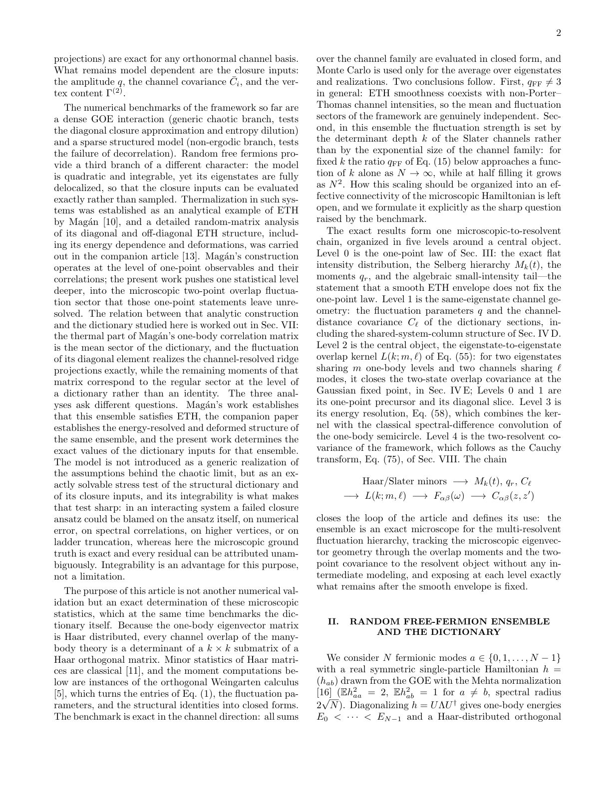
<figcaption class="paper-figure-caption"><b>Fig 1.</b> Low-resolution page preview, page 2</figcaption>
</figure>
<figure class="paper-figure-card">
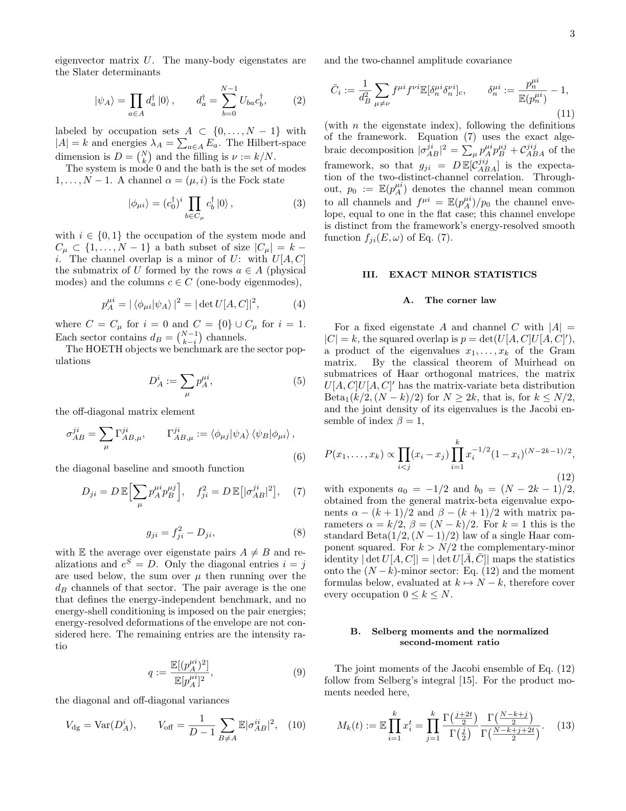
<figcaption class="paper-figure-caption"><b>Fig 2.</b> Low-resolution page preview, page 3</figcaption>
</figure>
<figure class="paper-figure-card">
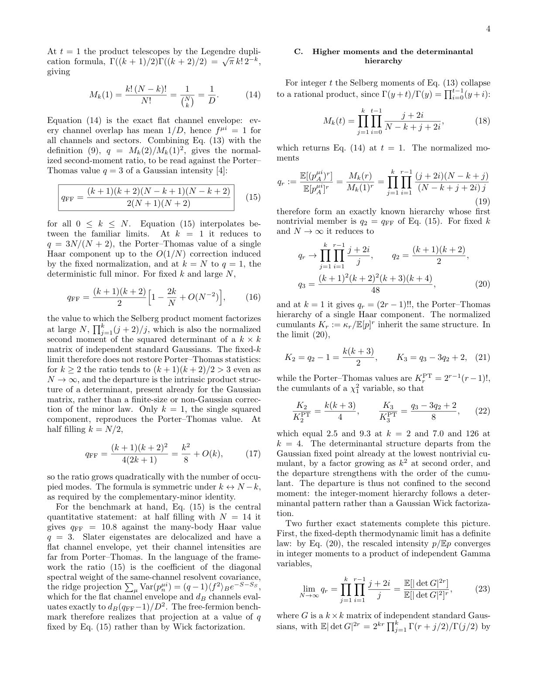
<figcaption class="paper-figure-caption"><b>Fig 3.</b> Low-resolution page preview, page 4</figcaption>
</figure>
<figure class="paper-figure-card">
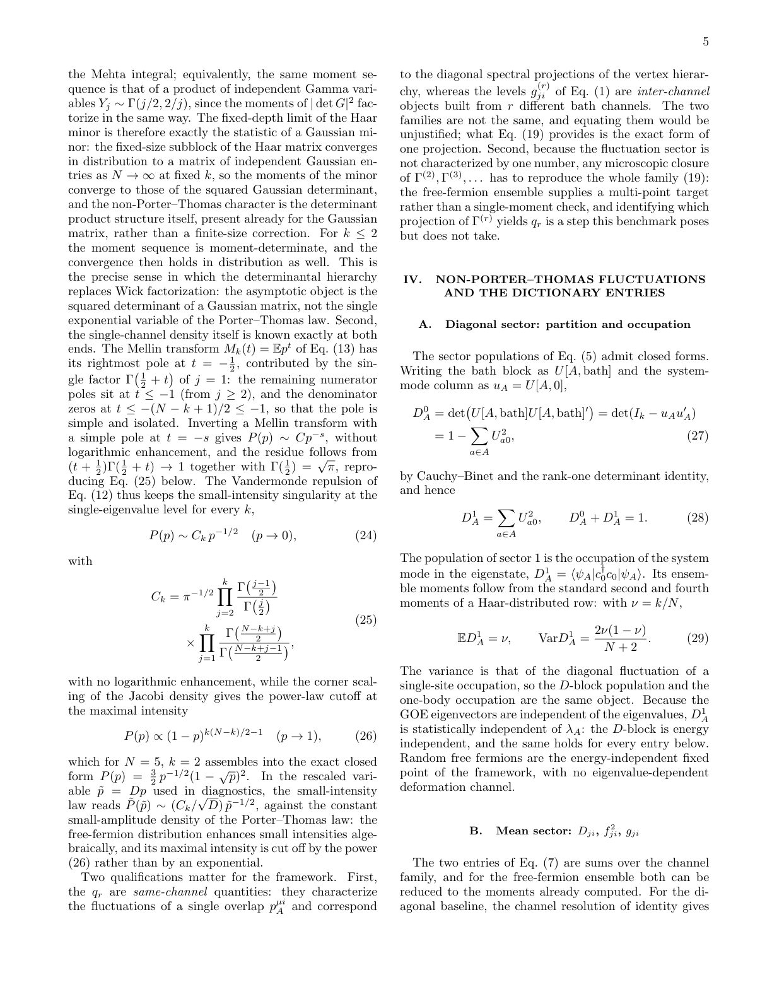
<figcaption class="paper-figure-caption"><b>Fig 4.</b> Low-resolution page preview, page 5</figcaption>
</figure>
<figure class="paper-figure-card">
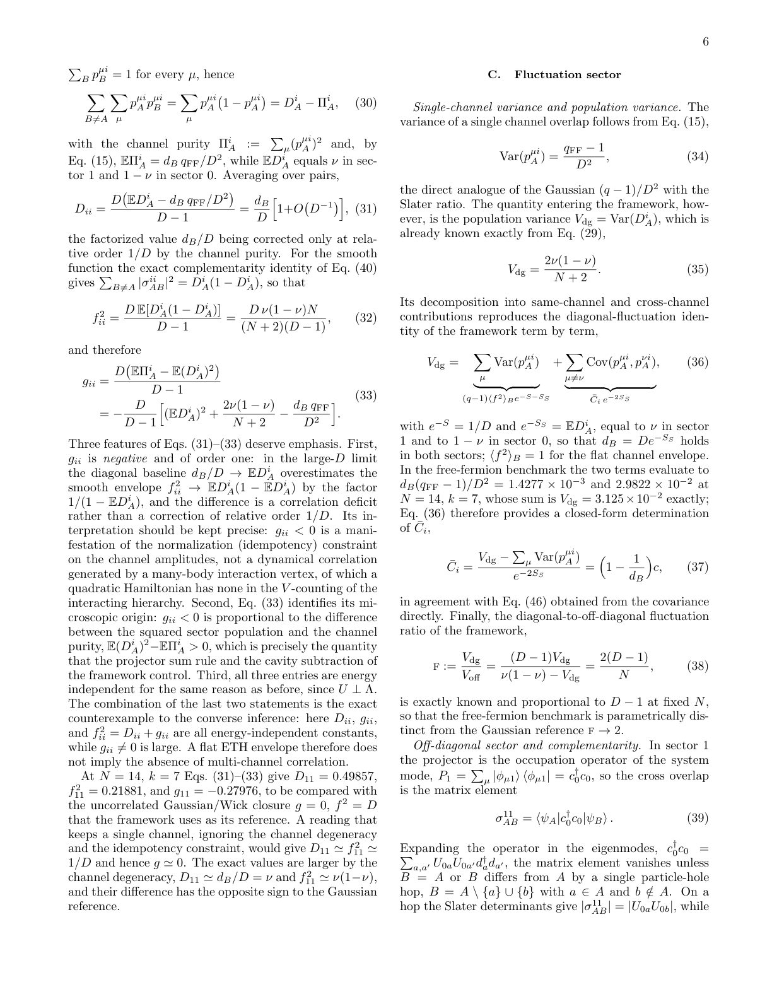
<figcaption class="paper-figure-caption"><b>Fig 5.</b> Low-resolution page preview, page 6</figcaption>
</figure>
</div>

<p><strong>Summary.</strong> This paper solves the microscopic statistics of eigenstate overlaps in random free fermions, going beyond the smooth energy dependence predicted by ETH. By calculating the exact two-point covariance, the authors prove that the fine-grained quantum fluctuations are not determined by the smooth energy envelope. This provides a crucial, exactly solvable benchmark for understanding thermalization in many-body quantum systems.</p>
<p><strong>Why it may be interesting.</strong> It provides a rigorous, exactly solvable model to test the limits of ETH, offering concrete, non-trivial statistics for quantum fluctuations that are crucial for understanding thermalization in complex quantum systems.</p>
<details>
<summary>Detailed structure</summary>
<p><strong>Main problem.</strong> To determine the microscopic statistics of overlaps between many-body eigenstates and a basis, going beyond the one-point statement provided by Eigenstate Thermalization Hypothesis (ETH).</p>
<p><strong>Main result.</strong> The two-point covariance closes exactly at the Gaussian fixed point, demonstrating that the smooth ETH envelope does not determine the fine-grained two-point fluctuations.</p>
<p><strong>Method.</strong> The authors use an exactly solvable random free-fermion ensemble to derive exact moment statistics for channel overlaps, comparing them to established random-matrix theory benchmarks.</p>
<p><strong>Model / system.</strong> The system is random free fermions whose eigenstates are Slater determinants built from eigenvectors of a Gaussian Orthogonal Ensemble (GOE) single-particle Hamiltonian. This ensemble serves as an exactly solvable benchmark for testing theoretical structures.</p>
<p><strong>Key observables.</strong> Two-point overlap covariance, normalized second-moment ratio ($q$), and the structure of the multi-resolvent correlation levels ($g_{ji}$).</p>
<p><strong>Important parameters / regimes.</strong> The depth of the determinant ($k$), the number of fermionic modes ($N$), and the correlation correction terms ($g_{11}$).</p>
<p><strong>Assumptions / limitations.</strong> The analysis relies on the framework of a 'multi-resolvent dictionary' to separate the ETH function into a smooth baseline and fluctuation terms.</p>
<p><strong>Figures summary.</strong> Not specified, but the notes reference tables comparing analytic ETH constructions with exact free-fermion results across different theoretical sectors.</p>
<p><strong>Paper structure.</strong> The paper builds a multi-resolvent hierarchy, first analyzing the one-point statistics (flat intensity distribution), then deriving the exact two-point covariance using random-matrix theory, and finally establishing the structural identities that show the independence of the mean and fluctuation sectors.</p>
</details>
<details>
<summary>Abstract</summary>
<p>Eigenstate thermalization constrains the smooth dependence of observables on energy, but it does not by itself fix the microscopic statistics of the overlaps between many-body eigenstates and a chosen basis: the smooth envelope is a one-point statement, and the fluctuation field it leaves undetermined carries a structured two-point covariance. We establish this distinction, and solve that fluctuation field exactly, in random free fermions---an ensemble of Slater-determinant eigenstates built from a Gaussian orthogonal single-particle Hamiltonian, whose eigenstate thermalization was established by Magán.   In this ensemble every channel overlap is a minor of a Haar-distributed orthogonal matrix, so its statistics follow from classical random-matrix theory. The one-point law is exactly flat for every channel, with an exact moment hierarchy that is not Porter--Thomas: small intensities are enhanced algebraically rather than by the exponential Porter--Thomas form, and the mean sector carries a negative, order-one correlation correction of purely normalization origin. The two-point covariance closes exactly at the Gaussian fixed point: it is organized by the number of one-body modes shared by two eigenstates and by the number of modes shared by two channels, and its energy-resolved form factorizes into this geometry times the classical convolution of the single-particle semicircle, from which the two-resolvent covariance follows by an integral transform. Exact finite-size computations confirm all closed forms, and the structural identities of the dictionary hold at machine precision. The results provide an exactly solvable microscopic realization of the two-point fluctuation sector underlying multi-resolvent descriptions of eigenstate thermalization: a smooth envelope does not determine fine-grained fluctuations.</p>
</details>
<p><sub><a href="#top">↑ back to top</a></sub></p>

<p><a id="paper-2609.16929"></a></p>
<h3 id="exact-efficient-simulation-of-noisy-logical-magic-states-using-clifford-stabilizers"><a href="http://arxiv.org/abs/2609.16929v1">Exact efficient simulation of noisy logical magic states using Clifford stabilizers</a></h3>
<p><strong>Authors:</strong> Yugo Takada, Stephen D. Bartlett, Dominic J. Williamson<br>
<strong>Type:</strong> theory · <strong>Category:</strong> quantum information and computing · <strong>PDF:</strong> <a href="https://arxiv.org/pdf/2609.16929v1">https://arxiv.org/pdf/2609.16929v1</a><br>
<strong>Analysis basis:</strong> full PDF text, analyzed in chunks
<strong>Topic relevance:</strong> <code>methods for driven-dissipative</code> <strong>1/5</strong> · <code>quantum measurements</code> <strong>1/5</strong></p>
<div class="figure-strip-hint">↔ Scroll figures horizontally</div>
<div class="paper-figures-scroll">
<figure class="paper-figure-card">
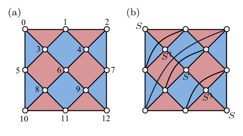
<figcaption class="paper-figure-caption"><b>Fig 1.</b> FIG. 2. The distance-3 regular (unrotated) surface code. (a) The definition of the code. The circles represent qubits. The red and blue faces correspond to X and Z stabilizers, respec- tively. (b) The fold-transversal ¯S gate. The S and S† gates act on the diagonal qubits alternately, and CZ gates act on the rest of the qubits. Each CZ gate, depicted as a black curved line, acts on a pair of qubits at mirrored positions.</figcaption>
</figure>
<figure class="paper-figure-card">
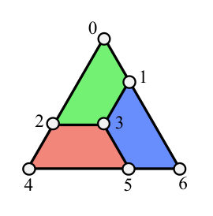
<figcaption class="paper-figure-caption"><b>Fig 2.</b> FIG. 4. Steane code. The circles denote qubits. The X and Z stabilizer generators are defined to act on the qubits around each face.</figcaption>
</figure>
<figure class="paper-figure-card">
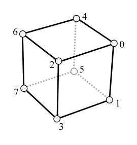
<figcaption class="paper-figure-caption"><b>Fig 3.</b> FIG. 3. Cubic lattice on which the J8, 3, 2K code is defined. The circles represent qubits.</figcaption>
</figure>
<figure class="paper-figure-card">
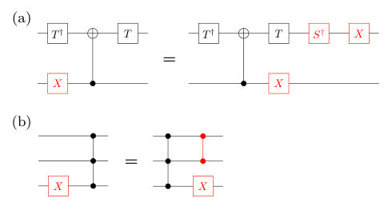
<figcaption class="paper-figure-caption"><b>Fig 4.</b> FIG. 5. Clifford errors on the data qubits arising from hook errors when measuring the Clifford operator ¯HXY by jointly measuring physical Hermitian operators. (a) Circuit for mea- suring the physical Hermitian operator TXT † = e−iπ/4SX = eiπ/4XS†. The upper and lower wires represent a data and ancilla qubit, respectively. The X error on the ancilla qubit produces a Clifford S† error on the data qubit. (b) Circuit for measuring the physical Hermitian operator CZ. The lower wire corresponds to an ancilla qubit, and the other two wires are data qubits. The X error on the ancilla qubit propagates to a Clifford CZ error on the data qubits.</figcaption>
</figure>
<figure class="paper-figure-card">
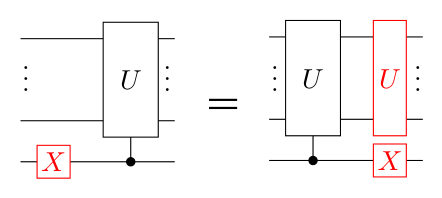
<figcaption class="paper-figure-caption"><b>Fig 5.</b> FIG. 6. Propagation of a hook error through a controlled-U gate, where U is a Hermitian unitary. The bottom wire rep- resents the ancilla qubit, while the remaining wires represent the data qubits.</figcaption>
</figure>
</div>

<p><strong>Summary.</strong> This paper presents Clifford-stabilizer simulation, a novel, efficient algorithm for classically simulating the noisy preparation of logical magic states crucial for fault-tolerant quantum computation. By mapping complex non-Clifford noisy circuits onto equivalent Clifford circuits, the method allows for the exact benchmarking of large-scale quantum error correction protocols. This provides a vital tool for assessing the feasibility of useful FTQC.</p>
<p><strong>Why it may be interesting.</strong> While focused on quantum computation, the development of efficient classical simulation techniques for complex, error-prone quantum circuits is a significant computational tool relevant to understanding resource scaling in quantum information.</p>
<details>
<summary>Detailed structure</summary>
<p><strong>Main problem.</strong> The core challenge is developing an exact and efficient classical simulation method to predict the performance of fault-tolerant quantum computation (FTQC) by simulating noisy logical magic state preparation.</p>
<p><strong>Main result.</strong> The authors introduce Clifford-stabilizer simulation, an efficient algorithm that exactly maps non-Clifford noisy circuits to equivalent Clifford circuits, enabling benchmarking of large-scale magic state preparation up to fault distance 7.</p>
<p><strong>Method.</strong> The method involves tracking the evolution of a Clifford-stabilizer group ($    ext{GC}$) to simulate noisy protocols, mapping non-Clifford operations to an equivalent Clifford circuit representation.</p>
<p><strong>Model / system.</strong> The context is quantum error correction codes (e.g., surface codes) used in FTQC, focusing on preparing logical magic states required for non-Clifford gates. The simulation incorporates circuit-level Pauli errors and Pauli-stabilizer codes.</p>
<p><strong>Key observables.</strong> Measurement outcome distributions, logical error rates, and acceptance rates for magic state cultivation protocols.</p>
<p><strong>Important parameters / regimes.</strong> Fault distance ($f=3, 5, 7$), circuit-level Pauli error rates, and the size of the stabilizer group.</p>
<p><strong>Assumptions / limitations.</strong> The simulation assumes a specific noise model (depolarizing channel) and utilizes a systematic approach to map non-Clifford dynamics onto a Clifford-stabilizer framework.</p>
<p><strong>Figures summary.</strong> Figures illustrate gate-teleportation circuits for T-gate implementation and the structure of surface codes for various distances, while tables detail the cultivation protocols for $f=3, 5, 7$.</p>
<p><strong>Paper structure.</strong> The paper builds conceptually by first defining the problem, introducing the Clifford-stabilizer group ($  ext{GC}$), establishing update rules, and finally applying the simulation framework to detailed protocols for magic state cultivation and error correction.</p>
</details>
<details>
<summary>Abstract</summary>
<p>The preparation of high-fidelity logical magic states is a crucial subroutine for universal fault-tolerant quantum computation (FTQC). Predicting the performance of FTQC and developing improved protocols rely on numerical methods to classically simulate logical magic state preparation in the presence of noise. Clifford logic on Pauli-stabilizer codes with circuit-level Pauli errors can be efficiently simulated using Pauli-stabilizer formalism, but the non-Clifford operations required to prepare logical magic states render generic simulation inefficient. We introduce Clifford-stabilizer simulation, an exact and efficient algorithm based on updating a Clifford-stabilizer group to simulate noisy preparation protocols for a broad class of logical magic states used to implement non-Clifford gates in the third level of the Clifford hierarchy under circuit-level Pauli errors. Clifford-stabilizer simulation applies to a range of operations that commonly appear in preparation protocols for such logical magic states, including Pauli-stabilizer measurements, logical Clifford measurements, and transversal non-Clifford gates. Our algorithm for Clifford-stabilizer simulation maps a non-Clifford circuit with sampled circuit-level Pauli errors to a Clifford circuit that exactly reproduces its measurement outcome distribution, achieving time and space complexities polynomial in relevant protocol parameters. We perform exact simulation of magic state cultivation up to fault distance 7 by Clifford-stabilizer simulation. Our method provides a route to perform exact benchmarking of large-scale logical magic state preparation protocols required for useful FTQC.</p>
</details>
<p><sub><a href="#top">↑ back to top</a></sub></p>

<p><a id="paper-2609.16435"></a></p>
<h3 id="exact-work-characteristic-functions-for-time-dependent-bosonic-quadratic-hamiltonians"><a href="http://arxiv.org/abs/2609.16435v1">Exact Work Characteristic Functions for Time-Dependent Bosonic Quadratic Hamiltonians</a></h3>
<p><strong>Authors:</strong> F. Nicacio, R. N. P. Maia<br>
<strong>Type:</strong> theory · <strong>Category:</strong> statistical mechanics · <strong>PDF:</strong> <a href="https://arxiv.org/pdf/2609.16435v1">https://arxiv.org/pdf/2609.16435v1</a><br>
<strong>Analysis basis:</strong> full PDF text, analyzed in chunks
<strong>Topic relevance:</strong> <code>Full counting statistics</code> <strong>1/5</strong> · <code>Keldysh / 2PI / non-Gaussian methods</code> <strong>1/5</strong></p>
<div class="figure-strip-hint">↔ Scroll figures horizontally</div>
<div class="paper-figures-scroll">
<figure class="paper-figure-card">
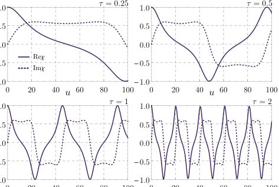
<figcaption class="paper-figure-caption"><b>Fig 1.</b> Figure 2. CF as a function of u under an undisplaced Hamiltonian for four values of the final time of the protocol τ. The inverse tem- perature of the initial thermal equilibrium state (48) is β = 1. The continuous (dotted) curves correspond to the real (imaginary) part of function in (70) for the QH in (11) with vector ξt = 0, ∀t, that is a0 = 0 in (89), and ht = 0, ∀t. The Hessian of Hamiltonian is defined in (88), with mass and frequency both in (91). The parame- ters in (91) used in this plot are m0 = 1, θ0 = 2π, k1 = 0.2, and k2 = 0.1 (The same as in Fig.1). All quantities are written in arbi- trary units.</figcaption>
</figure>
<figure class="paper-figure-card">
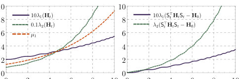
<figcaption class="paper-figure-caption"><b>Fig 2.</b> Figure 1. Left: Eigenvalues λ1 and λ2 and the symplectic eigenvalue µ1 of the Hessian matrix Ht in Eq.(92). The numerical value of λ1 is multiplied by a factor 10, whereas that of λ2 is divided by a factor 10, for visual clarity. The crossing of the three curves around t = 4.5 is a coincidence due to the rescaling of the values. Right: Eigenvalues λ1 and λ2 of the Matrix (S⊤ τ HτSτ −H0) for the matrices Ht in Eq.(92) and the symplectic matrix St in (87). The numerical value of λ1 is multiplied by a factor 10. The parameters used in this figure are m0 = 1, θ0 = 2π, k1 = 0.2, and k2 = 0.1, all written in arbitrary units.</figcaption>
</figure>
<figure class="paper-figure-card">
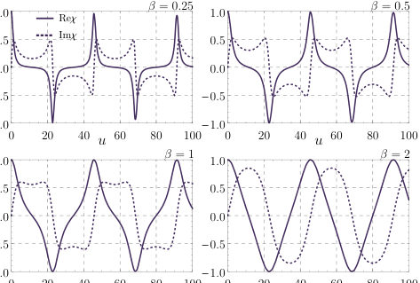
<figcaption class="paper-figure-caption"><b>Fig 3.</b> Figure 3. CF as a function of u under an undisplaced Hamiltonian for four values of the temperature of the initial state β. The final time of the protocol is τ = 1. See Fig. 2 for the remaining parameters description.</figcaption>
</figure>
<figure class="paper-figure-card">
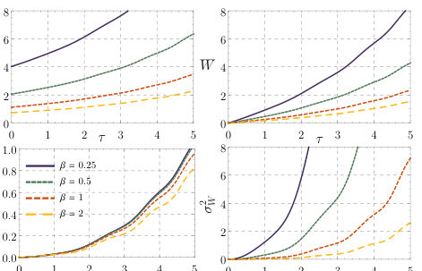
<figcaption class="paper-figure-caption"><b>Fig 4.</b> Figure 4. Mean Energy ⟨ˆHτ⟩in Eq.(60), Mean work W in Eq.(69), Nonequilibrium Lag L in Eq.(8), and variance of the work distribu- tion σ2 W in (72) as functions of the final time of the protocol τ under an undisplaced Hamiltonian for four values of the inverse temper- ature of the initial state β in (48). See Fig. 2 for the remaining parameters description.</figcaption>
</figure>
<figure class="paper-figure-card">
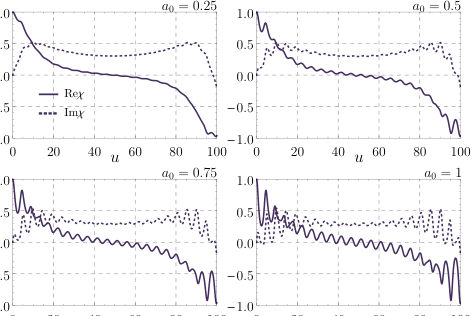
<figcaption class="paper-figure-caption"><b>Fig 5.</b> Figure 5. CF as a function of u under a displaced Hamiltonian and for four values of the displacement parameter a0. The continuous (dotted) curves correspond to the real (imaginary) part of the function in (52) for the QH in (11) with vector ξt in (89), and ht = 0, ∀t. The Hessian of Hamiltonian is defined in (88), with mass and frequency both in (91). The final time of the protocol is τ = 0.25 and the inverse temperature of the initial thermal equilibrium state (48) is β = 0.5. See Fig.2 for the remaining parameters description.</figcaption>
</figure>
</div>

<p><strong>Summary.</strong> This paper provides an exact analytical method to calculate the characteristic function of work for bosonic systems driven by time-dependent quadratic Hamiltonians. By reformulating the problem using symplectic geometry, the authors bypass the complex time-ordering issues inherent in quantum evolution. This framework successfully reproduces fundamental fluctuation theorems, making it a powerful tool for studying non-equilibrium quantum thermodynamics.</p>
<p><strong>Why it may be interesting.</strong> This work provides a powerful, general, and exact framework for calculating non-equilibrium work statistics in quadratic bosonic systems, directly connecting quantum dynamics (symplectic geometry) to core principles of non-equilibrium thermodynamics.</p>
<details>
<summary>Detailed structure</summary>
<p><strong>Main problem.</strong> Deriving an exact analytical expression for the characteristic function of work in closed many-body bosonic systems governed by general time-dependent quadratic Hamiltonians.</p>
<p><strong>Main result.</strong> An exact analytical expression for the work characteristic function is derived, which allows for the calculation of key thermodynamic quantities like the free energy and work variance.</p>
<p><strong>Method.</strong> The authors employ a formalism based on the inhomogeneous Metaplectic group, replacing the difficult time-ordering problem with the determination of a symplectic path in phase space.</p>
<p><strong>Model / system.</strong> The system consists of closed many-body bosonic systems described by general time-dependent quadratic Hamiltonians, which are analyzed using canonical variables in phase space.</p>
<p><strong>Key observables.</strong> Characteristic function of work ($\chi(u)$), Helmholtz free energy, mean work, work variance, and the nonequilibrium lag.</p>
<p><strong>Important parameters / regimes.</strong> The initial thermal equilibrium state ($
ho_0$), the time dependence of the Hamiltonian, and the symplectic path parameters.</p>
<p><strong>Assumptions / limitations.</strong> The primary derivation assumes the initial state is an instantaneous thermal equilibrium state, although generalizations to non-equilibrium states are discussed.</p>
<p><strong>Paper structure.</strong> The paper builds from the theoretical necessity of calculating work statistics in non-equilibrium processes, develops the mathematical machinery using the Metaplectic group and symplectic paths to derive the characteristic function, and finally applies this function to recover fundamental fluctuation theorems and thermodynamic relations.</p>
</details>
<details>
<summary>Abstract</summary>
<p>We derive an exact analytical expression for the characteristic function of work in closed many-body bosonic systems governed by general time-dependent quadratic Hamiltonians. This is made possible by adopting a unified prescription in which all operators appearing in the characteristic function are treated as elements of the inhomogeneous Metaplectic group. The esulting expression involves a single symplectic matrix, a single phase-space displacement, and a single accumulated phase. It holds for any number of degrees of freedom, arbitrary time dependence of the quadratic Hamiltonian, and any initial thermal equilibrium state of the system. The formalism trades the explicit time-ordering problem associated with the unitary evolution for the determination of a symplectic path in phase space, from which the corresponding driving Hamiltonian can be reconstructed. We also discuss the generalization to arbitrary nonequilibrium initial states within the two-projective-measurement scheme for quantum work. The same construction yields Loschmidt echoes and mixed-state total phases. Using the derived characteristic function, we obtain formulas for the Helmholtz free energy, the Jarzynski equality, the mean work, the work variance, and the nonequilibrium lag. Undisplaced Hamiltonians, sudden quenches, constant-Hessian protocols, and the adiabatic limit follow as special cases of the general result. As an illustration, we analyze a one-dimensional system constructed from an unconventional symplectic path and exhibiting physically relevant limiting cases. We then show how affine and purely symplectic contributions affect work statistics and irreversibility.</p>
</details>
<p><sub><a href="#top">↑ back to top</a></sub></p>

<p><a id="paper-2609.17281"></a></p>
<h3 id="gauge-a-formal-framework-for-measuring-cryptographic-security-under-heterogeneous-adversary-cost-models"><a href="http://arxiv.org/abs/2609.17281v1">GAUGE: A Formal Framework for Measuring Cryptographic Security under Heterogeneous Adversary Cost Models</a></h3>
<p><strong>Authors:</strong> Bhanwar Gupta, Sanjeev Rana<br>
<strong>Type:</strong> theory · <strong>Category:</strong> other · <strong>PDF:</strong> <a href="https://arxiv.org/pdf/2609.17281v1">https://arxiv.org/pdf/2609.17281v1</a><br>
<strong>Analysis basis:</strong> full PDF text, analyzed in chunks
<strong>Topic relevance:</strong> <code>Keldysh / 2PI / non-Gaussian methods</code> <strong>1/5</strong> · <code>quantum measurements</code> <strong>1/5</strong></p>
<div class="figure-strip-hint">↔ Scroll figures horizontally</div>
<div class="paper-figures-scroll">
<figure class="paper-figure-card">
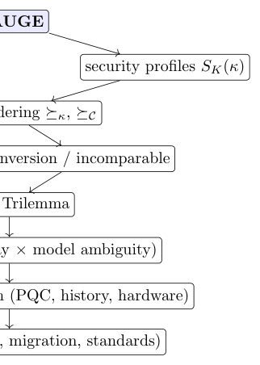
<figcaption class="paper-figure-caption"><b>Fig 1.</b> Figure 1: Conceptual structure of the framework.</figcaption>
</figure>
<figure class="paper-figure-card">
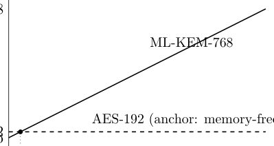
<figcaption class="paper-figure-caption"><b>Fig 2.</b> Figure 2: Security profiles (absolute bits) on the classical memory-price slice: SAES-192 is constant 192; SML-KEM-768 = 186 + 132.18 cM. The profiles cross at c∗ M = 0.045; pricing memory at 4.5% of the time unit reverses the comparison (Theorem 1, Experiment 2).</figcaption>
</figure>
<figure class="paper-figure-card">
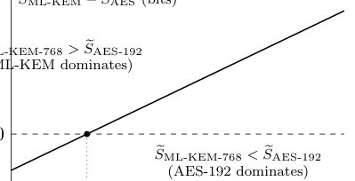
<figcaption class="paper-figure-caption"><b>Fig 3.</b> Figure 3: The price-cone region map for the pair (ML-KEM-768, AES-192) on the classical memory- price slice. The anchored difference is −6 + 132.18 cM; the ordering reverses across c∗ M = 0.045. The pair is incomparable on any region containing both conventions (Proposition 3, Theorem 1).</figcaption>
</figure>
<figure class="paper-figure-card">
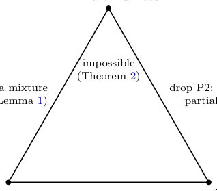
<figcaption class="paper-figure-caption"><b>Fig 4.</b> Figure 4: The Rating Trilemma. Each edge is a viable research program obtained by relaxing one axiom; the center is impossible in the presence of crossing profiles, which Section 8 exhibits among standardized schemes.</figcaption>
</figure>
<figure class="paper-figure-card">
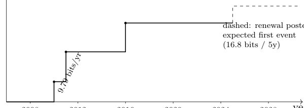
<figcaption class="paper-figure-caption"><b>Fig 5.</b> Figure 5: Historical evolution of lattice-sieving attack cost on the reference parameter class β = 637: cumulative bits gained by exponent improvements, 2008–2016, followed by nine quiet years.</figcaption>
</figure>
</div>

<p><strong>Summary.</strong> This paper introduces GAUGE, a formal framework to measure cryptographic security not by a single bit-count, but by a 'security profile' that maps across all possible adversary cost models. It mathematically proves that different cost models can lead to contradictory security rankings, providing an explicit, auditable method to quantify this model dependence. This is crucial for standards bodies to report security honestly when underlying assumptions about attacker resources are uncertain.</p>
<p><strong>Why it may be interesting.</strong> While not directly about physical quantum systems, the rigorous mathematical framework for uncertainty quantification and model dependence (risk measures, profile analysis) is highly relevant to any field where underlying assumptions or measurement models introduce systematic, non-Gaussian uncertainty.</p>
<details>
<summary>Detailed structure</summary>
<p><strong>Main problem.</strong> Current cryptographic security reporting relies on a single scalar bit-strength number, which is misleading because it depends entirely on the unstated adversary cost model used for pricing resources like time and memory.</p>
<p><strong>Main result.</strong> The authors introduce GAUGE, a framework that models security as a 'security profile' (a function over all admissible cost models), proving that ranking reversals are structural properties rather than measurement errors.</p>
<p><strong>Method.</strong> The framework formalizes price functionals over a cone of cost models, proving that security profiles are piecewise-linear and concave, and uses linear programming to certify the robustness of security rankings.</p>
<p><strong>Model / system.</strong> The model is abstract, dealing with cryptographic schemes and the space of admissible adversary cost models ($\kappa$). It defines security as a function of these models, leading to the concept of a 'security profile' $S_K(\kappa)$.</p>
<p><strong>Key observables.</strong> Security profile, Rating Trilemma, Robust/Reversing/Incomparable ranking status, Lattice-sieving cost drift (e.g., 9.79 bits/year).</p>
<p><strong>Important parameters / regimes.</strong> Adversary cost model parameters (time, memory, quantum resources); time horizons ($ au$); decay rates ($\delta$); and the structure of the cost cone.</p>
<p><strong>Assumptions / limitations.</strong> The framework assumes the existence of a cone of admissible cost models and uses concepts like anchor-relative profiles to normalize comparisons.</p>
<p><strong>Figures summary.</strong> Figure 1 conceptually maps cost models to security profiles; Table 1 compares schemes under multiple cost models, showing varying relative security costs.</p>
<p><strong>Paper structure.</strong> The paper establishes the problem with scalar reporting, introduces the GAUGE profile framework, proves mathematical properties (concavity, linearity), develops the linear-programming certification procedure, and concludes with concrete evaluations on PQC standards and risk measures.</p>
</details>
<details>
<summary>Abstract</summary>
<p>Standards bodies report cryptographic security as a single number of bits, but this value depends on the adversary cost model used to price time, memory, and quantum resources. Different conventions can therefore produce different rankings of cryptographic schemes. GAUGE represents security as a function over admissible cost models, called a security profile. Comparisons then become comparisons between profiles, and ranking reversals become an explicit structural property rather than a measurement error.   We formalize price functionals over a cone of adversary cost models, show that security profiles are piecewise-linear and concave, and prove a rating trilemma: when two profiles cross, no rating can simultaneously be faithful to underlying costs, total over comparable pairs, and independent of the chosen cost model. We provide a polynomial-time linear-programming procedure that certifies whether the ranking of two schemes is robust, reverses under admissible models, or is genuinely incomparable.   We extend GAUGE with a two-layer risk measure combining stochastic cryptanalytic decay with uncertainty over the appropriate cost model. We evaluate the framework on NIST post-quantum standards, classical anchors, and a 25-year chronology of cryptanalytic breaks. The analysis certifies a ranking reversal for ML-KEM-512 versus AES-128 from a 4-5% shift in memory pricing, and measures a lattice-sieving cost drift of 9.79 bits per year over eight years. A hybrid X25519 + ML-KEM-768 handshake reduces combined-break probability twenty-fold at a 2.3 kilobyte cost. The artifact reproduces all tables and figures in under seven seconds. GAUGE provides an explicit and auditable framework for reporting cryptographic security under competing cost models.</p>
</details>
<p><sub><a href="#top">↑ back to top</a></sub></p>

<p><a id="paper-2609.17213"></a></p>
<h3 id="latent-kinetic-ising-models-of-neural-spike-trains"><a href="http://arxiv.org/abs/2609.17213v1">Latent kinetic Ising models of neural spike trains</a></h3>
<p><strong>Authors:</strong> Davide Ghio, David Saad<br>
<strong>Type:</strong> both · <strong>Category:</strong> disordered systems and neural networks · <strong>PDF:</strong> <a href="https://arxiv.org/pdf/2609.17213v1">https://arxiv.org/pdf/2609.17213v1</a><br>
<strong>Analysis basis:</strong> full PDF text, analyzed in chunks
<strong>Topic relevance:</strong> <code>Keldysh / 2PI / non-Gaussian methods</code> <strong>1/5</strong> · <code>methods for driven-dissipative</code> <strong>1/5</strong></p>
<div class="figure-strip-hint">↔ Scroll figures horizontally</div>
<div class="paper-figures-scroll">
<figure class="paper-figure-card">
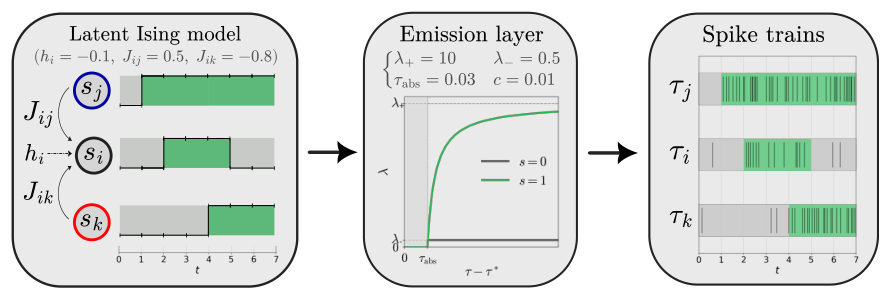
<figcaption class="paper-figure-caption"><b>Fig 1.</b> Figure 1: Schematic representation of the SpiKIsing model. (Left) Latent trajectories for three neurons. Neuron i receives positive coupling Jij = 0.5 from neuron j, negative coupling Jik = −0.8 from neuron k, and local field hi = −0.1. The state of the presynaptic neurons at time t −1 determines the probability that neuron i occupies its active latent state at time t. (Centre) Emission layer, represented by the conditional point-process intensity of neuron i, with λ+ i = 10, λ− i = 0.5, τ abs i = 0.03, and ci = 0.01. Following the absolute refractory interval, the active-state intensity recovers according to ρi(δ) = δ/(δ+ci). (Right) A stochastic realization of the continuous- time spike...</figcaption>
</figure>
<figure class="paper-figure-card">
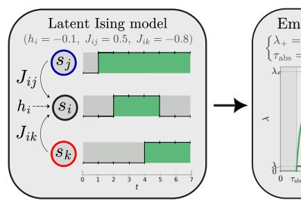
<figcaption class="paper-figure-caption"><b>Fig 2.</b> Figure 1 illustrates the complete generative mechanism. Positive and negative incoming couplings respectively favour and suppress the activation of neuron i at the following latent time step. Conditional on the resulting latent trajectory, the emission layer generates individual spikes stochastically: active intervals are associated with a higher firing rate, while refractoriness and post-spike recovery determine the short-time structure following each spike. Thus the latent trajectory controls the collective dynamical state, but does not uniquely determine the observed spike times.</figcaption>
</figure>
<figure class="paper-figure-card">
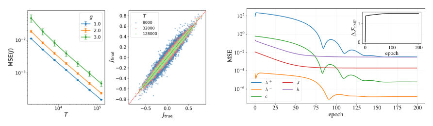
<figcaption class="paper-figure-caption"><b>Fig 3.</b> Figure 2: Matched-model validation of maximum-likelihood SpiKIsing inference. (a) Interaction recovery. Left: mean-squared error of the inferred interaction matrix as a function of the recording length T for different coupling strengths g. Right: inferred versus ground-truth couplings for three representative recording lengths. (b) Joint learning of latent and emission parameters. Evolution of the mean-squared errors in J, h, λ+, λ−, and c during inference. The inset shows ∆FnMF = FnMF(epoch) −FnMF(0). Simulation parameters are specified in the text.</figcaption>
</figure>
<figure class="paper-figure-card">
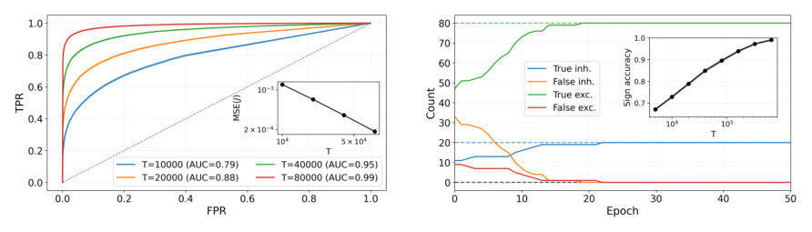
<figcaption class="paper-figure-caption"><b>Fig 4.</b> Figure 3: Matched-model validation of sparse and Dale-structured MAP inference. (a) Sparse connectivity recovery. Receiver Operating Characteristic (ROC) curves for clas- sification of non-zero interactions at different recording lengths T. The inset shows the MSE of the inferred interaction matrix. (b) Recovery of Dale-consistent structure. Evolution of the neuronal-type classification during inference. The inset shows the fraction of ground-truth non-zero couplings whose sign is correctly inferred as a function of recording length T. Both experiments use networks of N = 100 neurons. Further simulation and inference details are given in Appendices E and F.</figcaption>
</figure>
<figure class="paper-figure-card">
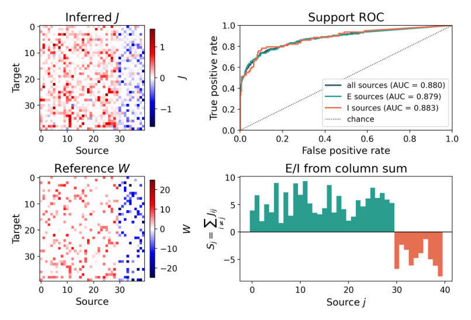
<figcaption class="paper-figure-caption"><b>Fig 5.</b> Figure 4: Structural recovery in a conductance-based LIF network. Results for 30 excitatory and 10 inhibitory neurons from a 98 s recording, inferred with latent interval ∆t = 10 ms. Upper left: inferred effective interactions J. Lower left: signed reference conductances W; rows denote targets and columns sources, with excitatory sources ordered first. Upper right: ROC curves for recurrent- connection support using |Jij| as the score. Lower right: outgoing interaction sums Sj = P</figcaption>
</figure>
</div>

<p><strong>Summary.</strong> This work introduces SpiKIsing, a latent-variable model that separates the collective dynamics of neurons (modeled by an Ising process) from the continuous-time spiking process. It uses a variational EM scheme to jointly infer the underlying network couplings and emission parameters from raw spike data. The method is robustly validated, showing it can accurately recover network structure despite modeling mismatches.</p>
<p><strong>Why it may be interesting.</strong> The framework uses concepts from statistical physics (Ising models, mean-field theory) to model complex, non-equilibrium biological dynamics, providing a rigorous mathematical structure for analyzing emergent collective behavior.</p>
<details>
<summary>Detailed structure</summary>
<p><strong>Main problem.</strong> The paper addresses the inverse problem of inferring the directed effective interactions governing collective neuronal dynamics solely from recorded spike trains.</p>
<p><strong>Main result.</strong> The proposed SpiKIsing model successfully recovers the sparse connection structure and correctly classifies neuronal types (excitatory/inhibitory) even when tested on data generated by different underlying dynamics.</p>
<p><strong>Method.</strong> It employs a variational mean-field expectation-maximization (EM) scheme to jointly infer latent network activity (modeled by an Ising process) and continuous-time emission parameters from the observed spike trains.</p>
<p><strong>Model / system.</strong> The system models neural spiking using a two-level latent variable approach: a discrete-time asymmetric kinetic Ising model governs the unobserved collective state, while continuous-time, history-dependent point processes generate the observed spikes conditioned on this latent state.</p>
<p><strong>Key observables.</strong> Inferred coupling strengths (J), local fields (h), and emission parameters (e.g., $\lambda^+, \lambda^-$).</p>
<p><strong>Important parameters / regimes.</strong> Latent time step ($\Delta t$), regularization strengths ($\gamma_1, \gamma_2$), and prior parameters ($eta$).</p>
<p><strong>Assumptions / limitations.</strong> The primary approximation is using a variational mean-field approach, which treats the continuous-time point-process likelihood as an effective observation field for the discrete Ising dynamics.</p>
<p><strong>Figures summary.</strong> Figures illustrate the full generative mechanism, parameter recovery validation on synthetic data, and the final inferred interaction matrix compared to ground truth.</p>
<p><strong>Paper structure.</strong> The paper introduces the latent variable model, derives the variational EM scheme, details the updates (including forward-only approximations), and validates the method using both synthetic and complex conductance-based LIF network simulations.</p>
</details>
<details>
<summary>Abstract</summary>
<p>Inferring directed effective interactions from neuronal spike trains is a central inverse problem in statistical physics and computational neuroscience. Kinetic Ising models provide a tractable framework for this task, but their application to neural data typically requires binning spike trains into binary activity variables, discarding within-bin timing and conflating collective network dynamics with single-neuron history effects.   We introduce SpiKIsing, a latent-variable model that separates these two levels of description. A discrete-time asymmetric kinetic Ising model describes collective network activity, while continuous-time, history-dependent point processes generate the observed spikes conditional on the latent states, accounting explicitly for refractoriness and post-spike recovery.   We derive a variational mean-field expectation-maximization scheme in which the point-process likelihood enters as an effective observation field, enabling joint inference of latent activity, network couplings, and emission parameters. The framework extends naturally to maximum-a-posteriori inference with structured priors, including sparsity and a hierarchical extension favouring Dale-consistent outgoing interactions.   We validate parameter recovery on matched synthetic data and test the method on spike trains generated by a recurrent conductance-based leaky integrate-and-fire network. In this setting, SpiKIsing recovers sparse connection structure and correctly classifies all excitatory and inhibitory neurons despite the substantial mismatch between the data-generating dynamics and the SpiKIsing model.</p>
</details>
<p><sub><a href="#top">↑ back to top</a></sub></p>

<p><a id="paper-2609.16721"></a></p>
<h3 id="rotation-collision-based-quantum-lattice-boltzmann-methods"><a href="http://arxiv.org/abs/2609.16721v1">Rotation Collision based Quantum Lattice Boltzmann Methods</a></h3>
<p><strong>Authors:</strong> Kangyang Zeng, Changshen Huang, Xi Liu, Xiaodong Niu, Zhenhua Chai<br>
<strong>Type:</strong> theory · <strong>Category:</strong> quantum information and computing · <strong>PDF:</strong> <a href="https://arxiv.org/pdf/2609.16721v1">https://arxiv.org/pdf/2609.16721v1</a><br>
<strong>Analysis basis:</strong> full PDF text, analyzed in chunks
<strong>Topic relevance:</strong> <code>analog quantum simulation</code> <strong>1/5</strong> · <code>methods for driven-dissipative</code> <strong>1/5</strong></p>
<div class="figure-strip-hint">↔ Scroll figures horizontally</div>
<div class="paper-figures-scroll">
<figure class="paper-figure-card">
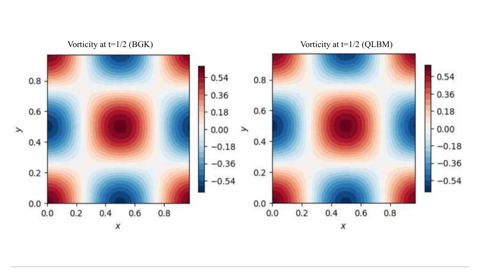
<figcaption class="paper-figure-caption"><b>Fig 1.</b> Figure 1: Vorticity contours for the Taylor–Green vortex at Re = 100, N = 32, U0 = 0.1, τ = 0.596, evaluated at the half-life time t1/2 of the velocity decay. Left: vorticity obtained by the classical BGK collision operator. Right: vorticity obtained by the rotation collision operator</figcaption>
</figure>
<figure class="paper-figure-card">
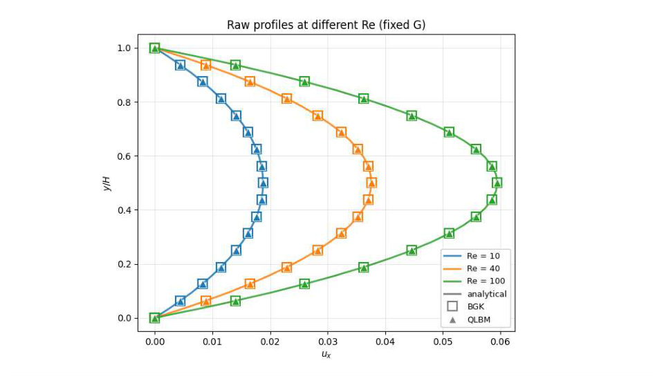
<figcaption class="paper-figure-caption"><b>Fig 2.</b> Figure 2: Velocity profiles of three cases with Re = 10, 40, 100. The results of lattice BGK method and QLBM agree with the analytical solution.</figcaption>
</figure>
<figure class="paper-figure-card">
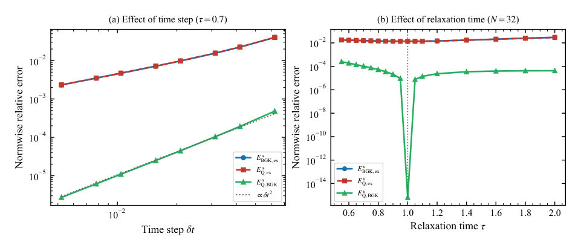
<figcaption class="paper-figure-caption"><b>Fig 3.</b> Figure 3: Relative errors of velocity based on the lattice BGK method and QLBM. (a) Effect of time step (τ = 0.7), the dotted line denotes the reference scaling αδt2. (b) Effect of relaxation time (N = 32 and U0 = 0.1); the two collision operators coincide at τ = 1 and discrepancy between them is up to floating-point round-off.</figcaption>
</figure>
<figure class="paper-figure-card">
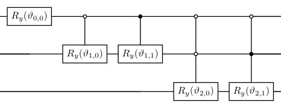
<figcaption class="paper-figure-caption"><b>Fig 4.</b> Figure 4: Three-qubit SBM circuit for the amplitude encoding of D2Q5 model. Qubits are ordered from q2 (MSB) to q0 (LSB). Open and filled controls denote conditions on |0⟩and |1⟩, respectively. Gates associated with zero-padded branches are omitted.</figcaption>
</figure>
<figure class="paper-figure-card">
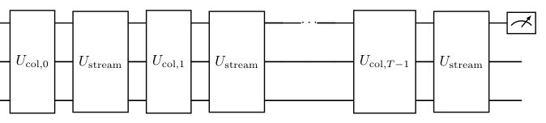
<figcaption class="paper-figure-caption"><b>Fig 5.</b> Figure 5: Sequential T-step circuit of D2Q5 model. Each step consists of a state-dependent collision Ucol,t followed by the fixed streaming operator.</figcaption>
</figure>
</div>

<p><strong>Summary.</strong> This paper introduces a Quantum Lattice Boltzmann Method (QLBM) that replaces the non-unitary BGK collision operator with a unitary rotation operator. This approach successfully addresses the unitarity constraint while maintaining second-order accuracy relative to the classical method. The framework is fully realized at the gate level, providing a pathway to simulate fluid dynamics on quantum computers.</p>
<p><strong>Why it may be interesting.</strong> This work provides a concrete, unitary quantum circuit implementation for a classical computational method (LBM), which is highly relevant for simulating complex many-body dynamics on near-term quantum hardware.</p>
<details>
<summary>Detailed structure</summary>
<p><strong>Main problem.</strong> The core challenge is developing a unitary quantum analogue for the non-unitary BGK collision operator used in the Lattice Boltzmann Method (LBM).</p>
<p><strong>Main result.</strong> The authors propose a novel Quantum Lattice Boltzmann Method (QLBM) using a unitary rotation collision operator that correctly approximates the BGK collision to $O(\delta t^2)$ in the continuum limit.</p>
<p><strong>Method.</strong> The non-unitary BGK relaxation is replaced by a unitary rotation in the amplitude space spanned by the current and equilibrium distribution states, leading to gate-level quantum circuit construction.</p>
<p><strong>Model / system.</strong> The method is applied to solve fluid dynamics equations using the LBM framework, specifically implemented for the D2Q5 (convection-diffusion) and D2Q9 (Navier-Stokes) models.</p>
<p><strong>Key observables.</strong> Relative velocity errors ($E_u$), mass conservation ($\sum f^*_i = 
ho$), and the contraction of the state deviation angle $\phi$.</p>
<p><strong>Important parameters / regimes.</strong> Relaxation time ($  au$), time step ($\delta t$), and the dimensionality/model (D2Q5 vs D2Q9).</p>
<p><strong>Assumptions / limitations.</strong> The primary assumption is that the unitary analogue of the BGK collision is a rotation contracting the angle $\phi$ by a factor of $(1 - 1/	au)$.</p>
<p><strong>Figures summary.</strong> Figures illustrate the sequential T-step quantum circuit for the D2Q5 model, showing state-dependent collision blocks interspersed with fixed streaming operators, and show error scaling confirming $O(\delta t^2)$ accuracy.</p>
<p><strong>Paper structure.</strong> The paper introduces the problem (non-unitary BGK), proposes the unitary rotation operator, derives its form for D2Q5 and D2Q9, details the gate-level circuit construction (including reusable components for D2Q5), and validates the method via numerical error analysis.</p>
</details>
<details>
<summary>Abstract</summary>
<p>In the existing quantum algorithms for the lattice Boltzmann method, resolving the unitarity problem of the BGK collision operator from first principles remains a fundamental challenge, and a systematically constructed unitary alternative that reproduces the BGK relaxation structure to leading order has not yet been established in the literature. In this work, we propose a novel quantum lattice Boltzmann method (QLBM) based on the rotation collision operator, in which the non-unitary BGK relaxation is replaced by a unitary rotation in the amplitude space of the distribution function, and the corresponding gate-level quantum circuits are also constructed. Specifically, the rotation collision operator is developed for both the D2Q5 model of the convection-diffusion equation and the D2Q9 model of the incompressible Navier--Stokes equations. It is worth noting that, for the D2Q5 model, the equilibrium-state preparation circuit can be precompiled and reused, and the resulting unitary blocks can be sequentially composed once the state-dependent collision parameters are specified. Finally, some numerical experiments are performed to validate the developed QLBM, demonstrating its accuracy and effectiveness.</p>
</details>
<p><sub><a href="#top">↑ back to top</a></sub></p>

<p><a id="paper-2609.16216"></a></p>
<h3 id="math657math-pod-realization-of-nonadiabatic-holonomic-quantum-computation"><a href="http://arxiv.org/abs/2609.16216v1">$d$-pod realization of nonadiabatic holonomic quantum computation</a></h3>
<p><strong>Authors:</strong> Oskar Axelsson, Claes Fälth, Elias Henriksson Lindberg, Erik Sjöqvist<br>
<strong>Type:</strong> theory · <strong>Category:</strong> quantum information and computing · <strong>PDF:</strong> <a href="https://arxiv.org/pdf/2609.16216v1">https://arxiv.org/pdf/2609.16216v1</a><br>
<strong>Analysis basis:</strong> full PDF text, analyzed in chunks
<strong>Topic relevance:</strong> <code>analog quantum simulation</code> <strong>1/5</strong></p>
<div class="figure-strip-hint">↔ Scroll figures horizontally</div>
<div class="paper-figures-scroll">
<figure class="paper-figure-card">
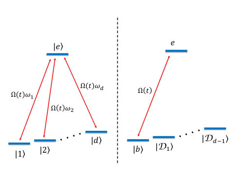
<figcaption class="paper-figure-caption"><b>Fig 1.</b> FIG. 1. Setup for a qudit system implemented using the d-pod config- uration. Left panel: Each computational basis state |1⟩, . . . , |d⟩is cou- pled to an excited state |e⟩. Right panel: The same system expressed in the dark-bright Morris-Shore [66] basis {|b⟩, |D1⟩, . . . , |Dd−1⟩}. Note that only the bright state |b⟩is coupled to |e⟩.</figcaption>
</figure>
</div>

<p><strong>Summary.</strong> This paper generalizes Holonomic Quantum Computation to $d$-dimensional qudits using the $d$-pod atomic configuration. It shows that this setup enables universal quantum gate sets for qudits using only simple optical or microwave pulse sequences. The work is significant for its resource efficiency and its systematic extension of geometric quantum control principles.</p>
<p><strong>Why it may be interesting.</strong> This work provides a concrete, resource-efficient theoretical blueprint for scaling quantum computation beyond qubits, directly relevant to experimental quantum control using trapped atoms.</p>
<details>
<summary>Detailed structure</summary>
<p><strong>Main problem.</strong> The paper addresses the systematic generalization of nonadiabatic Holonomic Quantum Computation (HQC) from standard qubit systems to higher-dimensional qudits ($d$-level systems).</p>
<p><strong>Main result.</strong> It demonstrates that the $d$-pod configuration allows for the realization of universal holonomic single- and two-qudit gates using only optical or microwave pulses on trapped atoms or ions.</p>
<p><strong>Method.</strong> The computation relies on exploiting non-Abelian geometric phases accumulated during cyclic evolution in the $d$-pod system, analyzed using the Grassmannian manifold.</p>
<p><strong>Model / system.</strong> The physical model is the $d$-pod configuration, consisting of a single excited state coupled to $d$ ground states forming the computational subspace. The dynamics are governed by a time-dependent Hamiltonian.</p>
<p><strong>Key observables.</strong> The gate operation is derived from the time evolution operator $U_{kl}$, and the purely holonomic nature is confirmed by specific geometric conditions.</p>
<p><strong>Important parameters / regimes.</strong> The required cyclic evolution condition is $\int_0^	au \Omega(t)dt = \pi$. The complexity increases with $d$, with the qutrit ($d=3$) case analyzed in detail.</p>
<p><strong>Assumptions / limitations.</strong> The analysis assumes the use of the rotating wave approximation and monochromatic fields, focusing on the $d$-pod generalization of the $\Lambda$-scheme.</p>
<p><strong>Figures summary.</strong> Figure 1 illustrates the $d$-pod setup, showing the coupling between the excited state and the $d$ ground states, and also depicts the system in the dark-bright Morris-Shore basis.</p>
<p><strong>Paper structure.</strong> The paper introduces the $d$-pod model, derives the conditions for holonomic evolution, and then details the construction of universal single- and two-qudit gates, providing explicit examples for the qutrit case.</p>
</details>
<details>
<summary>Abstract</summary>
<p>Holonomic quantum computation (HQC) realizes quantum gates through non-Abelian geometric phases, providing an experimentally accessible approach to quantum control. While the nonadiabatic HQC framework has been extensively developed for three-level $Λ$ systems encoding qubits, its systematic extension to higher-dimensional qudits remains largely unexplored. In this work, we generalize nonadiabatic HQC to a $d$-pod configuration, where a single excited state is coupled to $d$ ground states, the latter forming the computational subspace. This scheme enables universal holonomic single- and two-qudit gates using only optical or microwave pulses on trapped atoms or ions, offering an efficient route to implement a discrete universal gate set with minimal pulse coordination. As an explicit example, we analyze in detail the qutrit ($d=3$) case, demonstrating compact realizations of single- and two-qutrit holonomic gates, each gate requiring at most two loops in the Grassmannian generated by at most three pulses.</p>
</details>
<p><sub><a href="#top">↑ back to top</a></sub></p>

<p><a id="paper-2609.17501"></a></p>
<h3 id="a-case-study-on-noise-resilient-operator-selection-in-adaptive-variational-quantum-algorithms"><a href="http://arxiv.org/abs/2609.17501v1">A Case Study on Noise Resilient Operator Selection in Adaptive Variational Quantum Algorithms</a></h3>
<p><strong>Authors:</strong> Soorya Haravu, Mafalda Ramôa, Bharath Sambasivam<br>
<strong>Type:</strong> theory · <strong>Category:</strong> quantum information and computing · <strong>PDF:</strong> <a href="https://arxiv.org/pdf/2609.17501v1">https://arxiv.org/pdf/2609.17501v1</a><br>
<strong>Analysis basis:</strong> full PDF text, analyzed in chunks
<strong>Topic relevance:</strong> <code>quantum measurements</code> <strong>1/5</strong></p>
<div class="figure-strip-hint">↔ Scroll figures horizontally</div>
<div class="paper-figures-scroll">
<figure class="paper-figure-card">
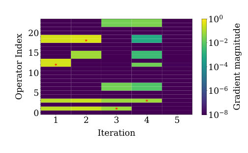
<figcaption class="paper-figure-caption"><b>Fig 1.</b> Figure 1: Gradient heatmap (left) and energy error plot (right) for a noiseless ADAPT-VQE run.</figcaption>
</figure>
<figure class="paper-figure-card">
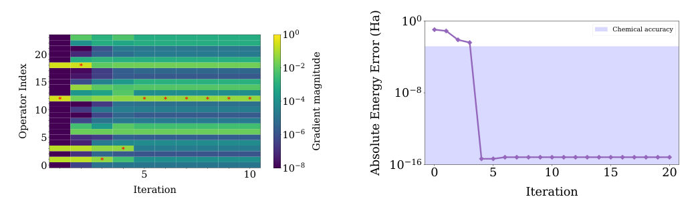
<figcaption class="paper-figure-caption"><b>Fig 2.</b> Figure 2: Gradient heatmap (left) and energy error plots (right) for an ADAPT-VQE run with the ‘all incoherent’ noise channel without error mitigation. The noise strength parameter is set to 0.01.</figcaption>
</figure>
<figure class="paper-figure-card">
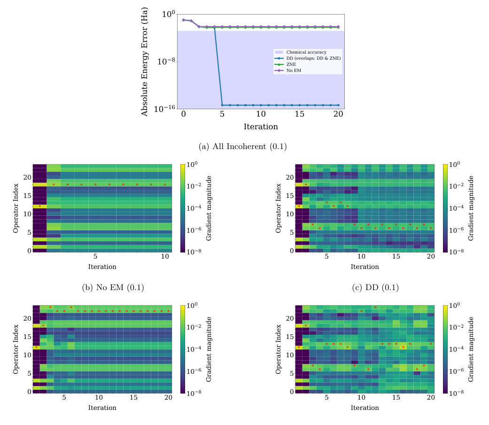
<figcaption class="paper-figure-caption"><b>Fig 3.</b> Figure 3: ‘All incoherent’ noise channel results at strength 0.1: energy-error plots (a), and gradient heatmaps (b-e) under different EM settings.</figcaption>
</figure>
<figure class="paper-figure-card">
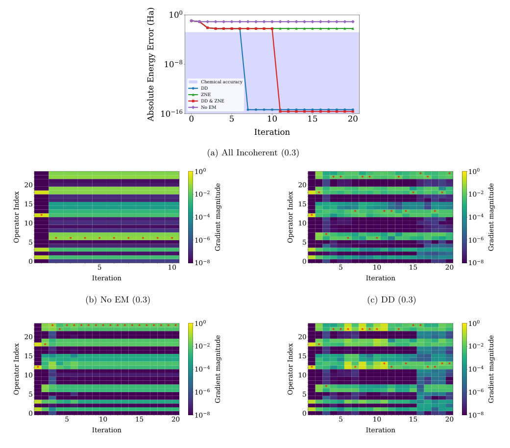
<figcaption class="paper-figure-caption"><b>Fig 4.</b> Figure 4: ‘All incoherent’ noise channel results at strength 0.3: energy-error plots (a), and gradient heatmaps (b-e) under different EM settings.</figcaption>
</figure>
<figure class="paper-figure-card">
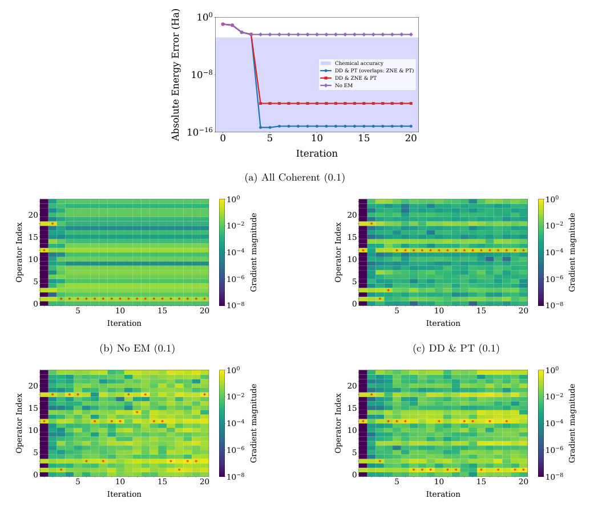
<figcaption class="paper-figure-caption"><b>Fig 5.</b> Figure 5: ‘All coherent’ noise results at strength 0.1: energy-error plots (a), and gradient heatmaps (b-e) under different EM settings.</figcaption>
</figure>
</div>

<p><strong>Summary.</strong> This work analyzes the vulnerability of ADAPT-VQE to hardware noise, focusing particularly on the operator selection step. It demonstrates that both coherent and incoherent noise can halt convergence, but the combination of error mitigation techniques like dynamical decoupling, zero noise extrapolation, and Pauli twirling can successfully restore the algorithm's performance. This offers crucial guidelines for implementing quantum chemistry simulations on noisy quantum processors.</p>
<p><strong>Why it may be interesting.</strong> It directly addresses the practical implementation challenges of quantum chemistry algorithms on near-term, noisy quantum hardware by providing a roadmap for error mitigation in the ansatz construction phase.</p>
<details>
<summary>Detailed structure</summary>
<p><strong>Main problem.</strong> The paper investigates how hardware noise affects the critical operator selection step within Adaptive Variational Quantum Algorithms (ADAPT-VQE).</p>
<p><strong>Main result.</strong> While noise can prevent convergence in ADAPT-VQE, combining appropriate quantum error mitigation techniques (like DD, ZNE, and PT) can successfully restore convergence and maintain performance.</p>
<p><strong>Method.</strong> The study uses ADAPT-VQE to calculate ground state energies and gradient measurements for molecular Hamiltonians under various noise channels.</p>
<p><strong>Model / system.</strong> The test case is a linear H3 molecule, simulated using a minimal STO-3G basis set represented by 6 qubits. The core methodology involves optimizing the expectation value using the VQE framework.</p>
<p><strong>Key observables.</strong> Ground state energy (E0), gradient magnitudes, and the convergence profile of the optimization process.</p>
<p><strong>Important parameters / regimes.</strong> Noise strength ($\gamma$ or $\phi$) tested at multiple levels (e.g., 0.01, 0.1, 0.3) for both incoherent and coherent noise channels.</p>
<p><strong>Assumptions / limitations.</strong> The analysis focuses specifically on injecting noise into the gradient measurements used for operator selection, rather than the entire VQE process.</p>
<p><strong>Figures summary.</strong> Figures show energy error plots and gradient heatmaps comparing performance with and without various error mitigation techniques (DD, ZNE, PT) across different noise types.</p>
<p><strong>Paper structure.</strong> The paper systematically analyzes the impact of different noise channels (incoherent vs. coherent) on ADAPT-VQE, demonstrating the failure modes and then proposing and testing combinations of error mitigation techniques to restore convergence.</p>
</details>
<details>
<summary>Abstract</summary>
<p>Hardware noise has been shown to significantly impact the accuracy of ADAPT-VQE, a ground state preparation algorithm. While previous work has studied the impact of noise on its parameter optimization step, its impact on the critical operator selection step remains comparatively unexplored. In this work, we examine the impact of a variety of noise channels on this step, using a linear H$_3$ molecule as a test case. We show that, despite the selection criterion's natural resilience to some noise, both coherent and incoherent noise can prevent convergence for sufficiently high noise rates. We employ quantum error mitigation techniques--dynamical decoupling, zero noise extrapolation, and Pauli twirling--and show that when combined appropriately, these techniques are capable of restoring a successful convergence profile. Our results highlight how error mitigation can improve the performance of ADAPT-VQE and enable convergence in the presence of hardware noise, offering valuable insights into the implementation of the algorithm on near-term quantum hardware.</p>
</details>
<p><sub><a href="#top">↑ back to top</a></sub></p>

<p><a id="paper-2609.17314"></a></p>
<h3 id="evolution-of-quantum-imaginarity-in-black-hole-quantum-atmosphere"><a href="http://arxiv.org/abs/2609.17314v1">Evolution of quantum imaginarity in black hole quantum atmosphere</a></h3>
<p><strong>Authors:</strong> Ruopu Sun, Xiaofen Huang<br>
<strong>Type:</strong> theory · <strong>Category:</strong> other · <strong>PDF:</strong> <a href="https://arxiv.org/pdf/2609.17314v1">https://arxiv.org/pdf/2609.17314v1</a><br>
<strong>Analysis basis:</strong> full PDF text, analyzed in chunks
<strong>Topic relevance:</strong> <code>Keldysh / 2PI / non-Gaussian methods</code> <strong>1/5</strong></p>
<div class="figure-strip-hint">↔ Scroll figures horizontally</div>
<div class="paper-figures-scroll">
<figure class="paper-figure-card">
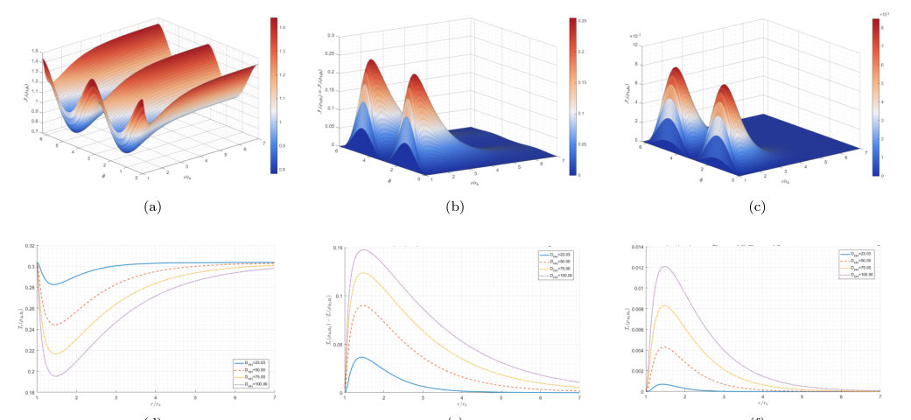
<figcaption class="paper-figure-caption"><b>Fig 1.</b> FIG. 1. Panels (a)–(c) display three-dimensional surface plots of imaginarity as functions of normalized radial distance r/rh and relative phase ϕ, with the state parameter fixed at θ = π/4, DHH = 50, and field frequency ω = 1. Panels (d)–(f) show the corresponding curves of imaginarity varying with r/rh under fixed θ and ϕ.</figcaption>
</figure>
<figure class="paper-figure-card">
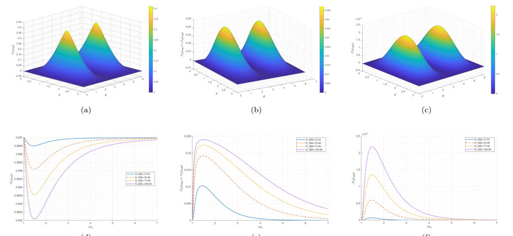
<figcaption class="paper-figure-caption"><b>Fig 2.</b> FIG. 2. The geometric imaginarity of the states ρAIBI, ρAIBII and ρAIIBII. Panels (a)–(c) are three-dimensional surface plots as functions of the state parameter θ and the phase ϕ, with normalized radial distance fixed at r/rh = 1.5, DHH = 50 and ω = 1. Panels (d)–(f) present the corresponding radial cross-section curves varying with r/rh under fixed θ and ϕ.</figcaption>
</figure>
<figure class="paper-figure-card">
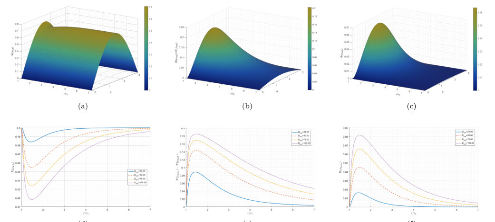
<figcaption class="paper-figure-caption"><b>Fig 3.</b> FIG. 3. The robustness of imaginarity for the states ρAIBI, ρAIBII and ρAIIBII as functions of the normalized radial distance r/rh and the state parameter θ, with fixed parameters DHH = 50, ϕ = π/4 and ω = 1. Panels (a)–(c) correspond to three-dimensional surface plots, and panels (d)–(f) display cross-section curves under different values of DHH.</figcaption>
</figure>
</div>

<p><strong>Summary.</strong> This theoretical work quantifies 'quantum imaginarity,' a measure of nonreal coherence, in the quantum atmosphere of a black hole. By analyzing three different imaginarity metrics, the authors map how this resource is modulated by Hawking radiation. The findings reveal distinct radial profiles and show that the local Hawking effect drives a measurable redistribution of quantum information across the black hole's vicinity.</p>
<p><strong>Why it may be interesting.</strong> The use of quantum resource theory (imaginarity) to characterize information structure in curved spacetime provides a novel diagnostic tool for understanding black hole thermodynamics and Hawking radiation effects.</p>
<details>
<summary>Detailed structure</summary>
<p><strong>Main problem.</strong> The paper investigates the evolution and redistribution of 'quantum imaginarity'—a metric for intrinsic nonreal coherence—within the quantum atmosphere of a static Schwarzschild black hole.</p>
<p><strong>Main result.</strong> The analysis shows that the relative-entropy, geometric, and robustness imaginarities exhibit characteristic radial profiles (valley/peak shapes) that are significantly modulated by the Hartle-Hawking constant, with the extremum positions tracking the local Hawking radiation peak.</p>
<p><strong>Method.</strong> The study employs resource-theoretic measures of quantum imaginarity ($I_r, I_g, R$) applied to reduced bipartite states derived from a four-partite Dirac field state, analyzing their dependence on radial position and phase.</p>
<p><strong>Model / system.</strong> The physical system is the quantum atmosphere surrounding a static Schwarzschild black hole, modeled using bipartite Dirac field reduced states evolving under the influence of Hawking thermal radiation.</p>
<p><strong>Key observables.</strong> Relative-entropy imaginarity ($I_r$), Geometric imaginarity ($I_g$), and Robustness of imaginarity ($R$).</p>
<p><strong>Important parameters / regimes.</strong> Black hole mass ($M$), event horizon radius ($r_h$), Hartle–Hawking constant, and normalized radial distance ($r/r_h$).</p>
<p><strong>Assumptions / limitations.</strong> The analysis focuses on bipartite Dirac field reduced states and assumes the initial state is a bipartite entangled pure state.</p>
<p><strong>Figures summary.</strong> Figures illustrate 3D plots and radial cross-sections of $I_r$ and $I_g$ for different state partitions, showing characteristic modulation patterns.</p>
<p><strong>Paper structure.</strong> The paper develops the mathematical framework for calculating imaginarity measures for reduced states, analyzes the radial and phase dependence of these measures, and discusses the implications of the Hartle-Hawking constant on resource redistribution.</p>
</details>
<details>
<summary>Abstract</summary>
<p>Quantum imaginarity, as a critical resource metric for quantifying intrinsic nonreal coherence encoded in quantum states, exhibits nontrivial evolutionary behaviors in curved spacetime backgrounds. This work focuses on bipartite Dirac field reduced states in the quantum atmosphere of a static Schwarzschild black hole, aiming to explore the modulation of three mainstream imaginarity measures by Hawking thermal radiation. We reveal that the relative-entropy imaginarity, the geometric imaginarity and robustness of imaginarity, the fully accessible state presents a valley-shaped radial profile with a local minimum inside the quantum atmosphere, while the cross-coupling and fully inaccessible states follow opposite peak-shaped trends. Further analysis demonstrates that the Hartle-Hawking constant significantly strengthens the redistribution effect of imaginarity across both regions, whereas an increase in the event horizon radius weakens such redistribution and flattens the extremum features. These findings offer a new perspective for decoding the information structure of black hole quantum atmospheres and the intrinsic quantum nature of Hawking radiation.</p>
</details>
<p><sub><a href="#top">↑ back to top</a></sub></p>

<p><a id="paper-2609.16587"></a></p>
<h3 id="hartree-fock-density-matrix-renormalization-group-for-very-long-chains"><a href="http://arxiv.org/abs/2609.16587v1">Hartree-Fock Density-Matrix Renormalization Group for Very Long Chains</a></h3>
<p><strong>Authors:</strong> Steven R. White<br>
<strong>Type:</strong> theory · <strong>Category:</strong> numerical methods · <strong>PDF:</strong> <a href="https://arxiv.org/pdf/2609.16587v1">https://arxiv.org/pdf/2609.16587v1</a><br>
<strong>Analysis basis:</strong> full PDF text, analyzed in chunks
<strong>Topic relevance:</strong> <code>methods for driven-dissipative</code> <strong>1/5</strong></p>
<div class="figure-strip-hint">↔ Scroll figures horizontally</div>
<div class="paper-figures-scroll">
<figure class="paper-figure-card">
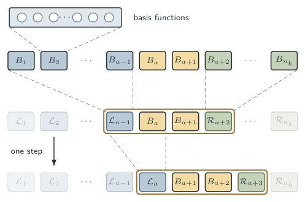
<figcaption class="paper-figure-caption"><b>Fig 1.</b> FIG. 1. An HF-DMRG sweep. The ordered basis is parti- tioned into blocks Ba. At a given sweep position, the blocks preceding and following the two-block center are compressed into the stored environments La−1 and Ra+2, with spin labels suppressed. Advancing the sweep absorbs Ba into La−1 to form La and retains Ba+1 in the center; the already stored Ra+3 is recalled for the next local problem. Earlier stored environments are drawn faintly. The upper inset shows how one block groups an interval of the ordered basis.</figcaption>
</figure>
<figure class="paper-figure-card">
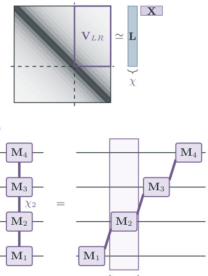
<figcaption class="paper-figure-caption"><b>Fig 2.</b> FIG. 2. Compression of the long-range interaction. (a) Trun- cating the singular-value decomposition of the cross-cut block gives VLR ≃LaXa with χa retained channels; the cut index a is suppressed in the drawing. (b) Two drawings of the same direct-sum network. The left diagram uses the usual MPO layout; the right shows the corresponding product of matrices over the whole space. Thin wires carry physical-block coordi- nates and thick links carry retained channels; parallel space dimensions add rather than multiply. The outlined slice is G2: the local matrix M2 together with identity actions on the other three blocks. Reading left to right in a row-vector convention gives V△≃G1G2G3G4, where...</figcaption>
</figure>
<figure class="paper-figure-card">
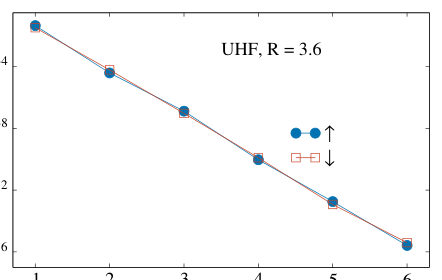
<figcaption class="paper-figure-caption"><b>Fig 3.</b> FIG. 3. At a central cut of UHF H100 (R = 3.6 bohr), the restricted occupations ⟨n⟩rapidly approach zero or one, leaving only a few active modes per spin. The six largest distances from zero or one are shown in descending order.</figcaption>
</figure>
<figure class="paper-figure-card">
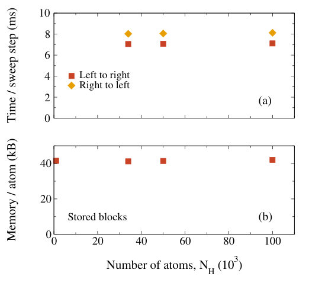
<figcaption class="paper-figure-caption"><b>Fig 4.</b> FIG. 5. Time and stored memory per atom change little with chain length. UHF chains at R = 3.6 bohr retain at most five active modes per spin. (a) Half-sweep time divided by NH, taking the median over late optimization half-sweeps in each direction. Each bulk block contains 18 spatial basis functions spanning one atomic interval. Each step advances the two-block center by one block, with NH steps per half- sweep in these chains. (b) Stored-block memory per atom in the converged states. Peak process memory is listed in Table V.</figcaption>
</figure>
<figure class="paper-figure-card">
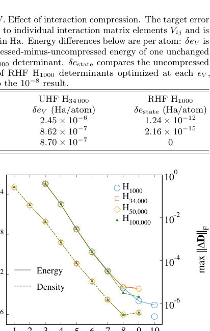
<figcaption class="paper-figure-caption"><b>Fig 5.</b> FIG. 4. UHF convergence from atomic N´eel product states at R = 3.6 bohr. Convergence changes little over two orders of magnitude in chain length. Solid curves (left axis): energy change per atom over one full sweep, |∆Eℓ|/NH = |Eℓ− Eℓ−2|/NH, measured at the end of half-sweep ℓ. Dashed curves (right axis): largest Frobenius norm of the change in a local spin density matrix from an orbital update, before truncation, maximized over positions and spins in that half-sweep. For H1000, only the final density-matrix change was recorded, so that series contains a single point.</figcaption>
</figure>
</div>

<p><strong>Summary.</strong> This paper adapts the Density-Matrix Renormalization Group (DMRG) algorithm to solve the computationally demanding Hartree-Fock equations for very long chains. By compressing both the electronic state and the long-range interactions, the authors achieve near-linear scaling, making large-scale electronic structure calculations feasible on standard desktop hardware.</p>
<p><strong>Why it may be interesting.</strong> This work demonstrates a powerful algorithmic adaptation of DMRG, extending its utility beyond standard correlated wavefunctions to tackle mean-field theories like HF for extended solids, which is crucial for simulating large-scale material properties.</p>
<details>
<summary>Detailed structure</summary>
<p><strong>Main problem.</strong> The paper addresses the computational challenge of applying Hartree-Fock (HF) theory to very large electronic systems, which typically suffers from high polynomial scaling due to long-range interactions.</p>
<p><strong>Main result.</strong> The authors successfully formulated HF as a Density-Matrix Renormalization Group (DMRG) sweep, achieving near-linear scaling for chains up to 100,000 atoms in a feasible time frame.</p>
<p><strong>Method.</strong> They adapt the DMRG framework by compressing the occupied state and the long-range electron-electron interaction separately, reducing the complex HF calculation into a sequence of small, local Fock problems.</p>
<p><strong>Model / system.</strong> The method is tested on uniform antiferromagnetic hydrogen chains, retaining the physical Coulomb interaction and its $1/r$ tail, using a basis set of Gaussian-type orbitals.</p>
<p><strong>Key observables.</strong> Convergence time (hours for $10^5$ atoms), memory usage ($\approx 21$ GB), and the linear scaling of computation time with chain length.</p>
<p><strong>Important parameters / regimes.</strong> Chain length up to 100,000 atoms; one-body tolerance of $10^{-8}$ Ha; local Fock matrix size remaining small ($\approx 45$ rows).</p>
<p><strong>Assumptions / limitations.</strong> The use of the density-density electron-electron interaction approximation and the assumption that state compression (one-particle and MPO compression) is sufficient for accuracy.</p>
<p><strong>Figures summary.</strong> Figures illustrate the DMRG sweep process, showing the partitioning of the basis into blocks and the storage/retrieval of environments. Other figures detail time/memory scaling and energy convergence plots.</p>
<p><strong>Paper structure.</strong> The paper details the formulation of HF as a DMRG sweep, describes the specific compression techniques (one-particle, MPO, density-space), presents computational results on scaling, and concludes with analysis of energy convergence and implementation details.</p>
</details>
<details>
<summary>Abstract</summary>
<p>We formulate Hartree--Fock as a density-matrix renormalization group (DMRG) sweep of a single Slater determinant, assuming a density--density electron--electron interaction. We compress the occupied state and long-range interaction separately, reducing each sweep step to a small local Fock problem. Exchange is retained throughout. Uniform antiferromagnetic hydrogen chains provide an almost ideal setting for this approach, while retaining the Coulomb interaction and its $1/r$ tail. We initialize and converge a chain of 100,000 electrons in 1.8 million spatial basis functions in about two hours on a 64-GB Mac mini, using less than a third of its memory. The work per sweep is nearly proportional to chain length, and the number of sweeps needed for convergence changes little from 1000 to 100,000 atoms. DMRG's compression of states and environments thus makes large HF calculations with long-range Hartree and exchange practical on an ordinary desktop computer.</p>
</details>
<p><sub><a href="#top">↑ back to top</a></sub></p>

<p><a id="paper-2609.16143"></a></p>
<h3 id="mode-selective-phonon-effects-on-magnetism-and-superconductivity-in-trilayer-nickelates"><a href="http://arxiv.org/abs/2609.16143v1">Mode-selective phonon effects on magnetism and superconductivity in trilayer nickelates</a></h3>
<p><strong>Authors:</strong> C. Alexander Baum, Jun Zhan, Congcong Le, Ronny Thomale, Xianxin Wu<br>
<strong>Type:</strong> theory · <strong>Category:</strong> strongly correlated electrons · <strong>PDF:</strong> <a href="https://arxiv.org/pdf/2609.16143v1">https://arxiv.org/pdf/2609.16143v1</a><br>
<strong>Analysis basis:</strong> full PDF text, analyzed in chunks
<strong>Topic relevance:</strong> <code>Keldysh / 2PI / non-Gaussian methods</code> <strong>1/5</strong></p>
<div class="figure-strip-hint">↔ Scroll figures horizontally</div>
<div class="paper-figures-scroll">
<figure class="paper-figure-card">
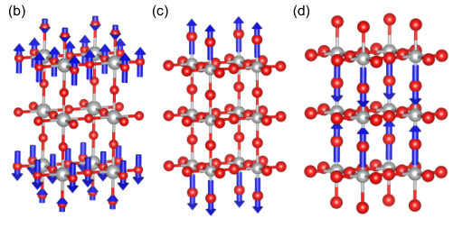
<figcaption class="paper-figure-caption"><b>Fig 1.</b> FIG. 1. (color online) Phonon properties and electron-phonon cou- pling of La4Ni3O10 for the 𝐼4∕𝑚𝑚𝑚phase at 40 GPa. (a) Phonon dispersion spectrum, linewidth, density of states 𝐹(𝜔), and Eliash- berg spectral function 𝛼2𝐹(𝜔) . The red circles on the dispersion curves represent the phonon linewidth, indicating the strength of the electron-phonon coupling. (b)-(d) Atomic displacement patterns for the out-of-plane 𝐴1𝑔phonon modes at the Γ point, with frequencies of 468, 553, and 651 cm−1, respectively.</figcaption>
</figure>
<figure class="paper-figure-card">
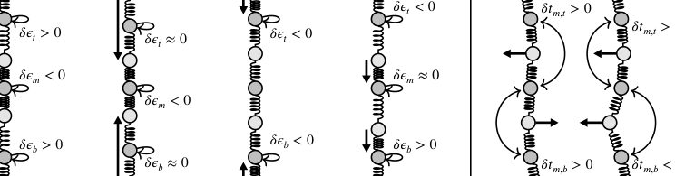
<figcaption class="paper-figure-caption"><b>Fig 2.</b> FIG. 2. Idealization of the trilayer of Nickel atoms (dark gray) and the apical oxygen atoms (light gray) in the high-symmetry (a) and low- symmetry phase (b). We show example modes that induce different types of electron-phonon couplings. While in the high-symmetry phase, motions of the oxygen atoms only generate Holstein modes (c–f: A1g, Am 1g, At∕b 1g , A1u), SSH-coupling are induces by in-plane motions in the low-symmetry phase (g–h: ASSH 1g , ASSH 1u ).</figcaption>
</figure>
<figure class="paper-figure-card">
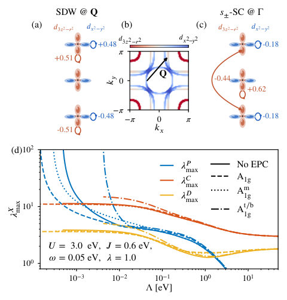
<figcaption class="paper-figure-caption"><b>Fig 3.</b> FIG. 3. We show the real-space form-factor components of the dom- inant SDW (a) and s±-SC states (c), along with the orbital-resolved Fermi surface (b) including the SDW nesting vector 𝐐. (d): FRG flow showing the maximum eigenvalues 𝜆𝑋 max for the three channels 𝑋∈{𝑃, 𝐶, 𝐷} and for idealized Holstein modes (cf. Fig. 2 (c–e)). At intermediate scales we find that SDW fluctuations are enhanced, eventually inducing s±-SC at low scales.</figcaption>
</figure>
<figure class="paper-figure-card">
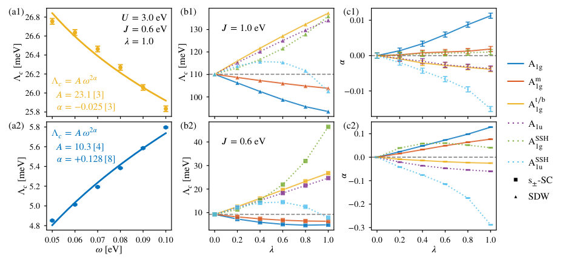
<figcaption class="paper-figure-caption"><b>Fig 4.</b> FIG. 4. (a1–a2): Scaling of Λ𝑐∼𝜔2𝛼and fit of Isotope coefficient of the s±-SC for the dominant modes At∕b 1g (yellow) and A1g (blue). (b1–b2): Critical scale Λ𝑐from FRG for 𝜔= 0.05 eV in the SDW (b1, 𝐽= 1.0 eV) and SC (b1, 𝐽= 0.6 eV) phase as a function of the dimensionless electron phonon coupling 𝜆for every mode in Fig. 2. (c1–c2): The isotope coefficient 𝛼= 1</figcaption>
</figure>
<figure class="paper-figure-card">
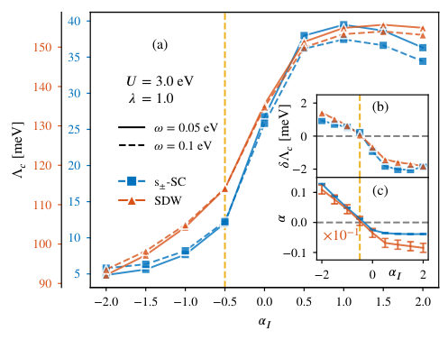
<figcaption class="paper-figure-caption"><b>Fig 5.</b> FIG. 5. (a): Critical FRG scale Λ𝑐as a function of the parameter 𝛼I for the A1g mode in the 𝑠±SC (blue, 𝐽= 0.6 eV) and SDW phases (red, 𝐽= 1.0 eV). The insets show the difference in scale between 𝜔= 0.05 eV and 𝜔= 0.1 eV (b) as well as an estimate for the isotope coefficient (c) calculated from Eq. (14). In (a) the observables are in different orders of magnitude so that the y-axis is split. Since 𝛼is roughly 10× smaller in the SDW phase, we rescaled its value accord- ingly. The approximate value 𝛼𝑐 I ≈−0.5 where the isotope coefficient changes sign is marked as vertical yellow line.</figcaption>
</figure>
</div>

<p><strong>Summary.</strong> This theoretical study uses FRG calculations to map the impact of electron-phonon coupling on magnetism and superconductivity in trilayer nickelates. It finds that the specific out-of-plane oxygen breathing modes create layer-dependent interactions that selectively enhance or suppress competing electronic orders. This establishes a microscopic framework for understanding the observed isotope effects in these high-temperature superconductors.</p>
<p><strong>Why it may be interesting.</strong> The concept of screening-mediated spin–phonon interplay provides a detailed, microscopic mechanism for how lattice vibrations can tune competing electronic orders, which is relevant to understanding quantum criticality in correlated materials.</p>
<details>
<summary>Detailed structure</summary>
<p><strong>Main problem.</strong> The study investigates how electron-phonon coupling (EPC) influences the competing electronic orders—magnetism (SDW) and superconductivity ($s_\pm$-wave)—in trilayer nickelates.</p>
<p><strong>Main result.</strong> The relative phases of EPC across the three layers generate distinct, mode-selective retarded interactions that can enhance or suppress SDW order and superconductivity.</p>
<p><strong>Method.</strong> The research employs ab initio calculations combined with the Functional Renormalization Group (FRG) formalism to treat phonon-mediated and Coulomb interactions simultaneously.</p>
<p><strong>Model / system.</strong> The system is trilayer nickelates, modeled using a tight-binding approach incorporating various Coulomb interactions. The analysis focuses on out-of-plane oxygen breathing modes which exhibit pronounced EPC.</p>
<p><strong>Key observables.</strong> Spin-Density-Wave (SDW) order, $s_\pm$-wave superconducting pairing, isotope coefficients ($\alpha_{SC}, \alpha_{SDW}$), and the Eliashberg spectral function ($\alpha^2F(\omega)$).</p>
<p><strong>Important parameters / regimes.</strong> High pressure ($P=40 	ext{ GPa}$), specific phonon frequencies (e.g., $553 	ext{ cm}^{-1}, 651 	ext{ cm}^{-1}$), and the relative phases of the EPC across the three layers.</p>
<p><strong>Assumptions / limitations.</strong> The analysis relies on projecting the full frequency dependence onto static channels within the FRG framework, and the model incorporates specific layer-dependent coupling terms.</p>
<p><strong>Figures summary.</strong> Figures illustrate phonon dispersion and EPC strength, while supplementary figures visualize the evolution of superconducting order parameter components and the calculation of isotope coefficients ($\Delta\Lambda_c$ and $\alpha$).</p>
<p><strong>Paper structure.</strong> The paper progresses by identifying dominant phonon modes (A1g out-of-plane modes), constructing symmetry-resolved EPC terms, and then using FRG to calculate how these terms modify the electronic interactions, leading to mode-selective predictions for SDW and SC.</p>
</details>
<details>
<summary>Abstract</summary>
<p>The discovery of high-$T_c$ superconductivity in multilayer nickelates has stimulated intense interest, yet the microscopic origins of their correlated states remain debated. Recently the observed isotope effect of the magnetic state in trilayer nickelates highlights the important role of lattice vibrations in shaping these systems. Here, we investigate the impact of electron-phonon coupling (EPC) on magnetism and superconductivity in trilayer nickelates using ab initio and functional renormalization group calculations. We identify out-of-plane oxygen breathing modes with pronounced EPC and construct symmetry-resolved, layer-dependent couplings. Their relative phases across the three layers generate distinct retarded interactions, producing mode-selective enhancement or suppression of spin-density-wave order and $s_\pm$-wave superconductivity. This selectivity arises from screening-mediated spin-phonon interplay across a hierarchy of energy scales: EPC modifies charge screening at higher energies, reshapes magnetic fluctuations at lower energies, and ultimately influences pairing. Selected modes yield negative isotope coefficients for the magnetic state, qualitatively consistent with experiments. Our results establish how interlayer phonons modify electronically driven order and provide a microscopic framework for understanding isotope effects in trilayer nickelates.</p>
</details>
<p><sub><a href="#top">↑ back to top</a></sub></p>

<p><a id="paper-2609.16935"></a></p>
<h3 id="nonlocal-magic-across-the-many-body-localization-crossover"><a href="http://arxiv.org/abs/2609.16935v1">Nonlocal Magic across the Many-Body Localization Crossover</a></h3>
<p><strong>Authors:</strong> Shan-Zhong Li, Zhi Li<br>
<strong>Type:</strong> theory · <strong>Category:</strong> disordered systems and neural networks · <strong>PDF:</strong> <a href="https://arxiv.org/pdf/2609.16935v1">https://arxiv.org/pdf/2609.16935v1</a><br>
<strong>Analysis basis:</strong> full PDF text, analyzed in chunks
<strong>Topic relevance:</strong> <code>analog quantum simulation</code> <strong>1/5</strong></p>
<div class="figure-strip-hint">↔ Scroll figures horizontally</div>
<div class="paper-figures-scroll">
<figure class="paper-figure-card">
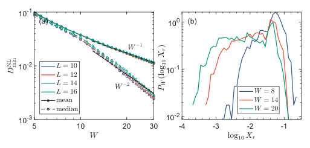
<figcaption class="paper-figure-caption"><b>Fig 1.</b> FIG. 2. Typical and rare NLM in the strongly dis- ordered regime. For each disorder realization r, we define Xr = N −1 eig P</figcaption>
</figure>
<figure class="paper-figure-card">

<figcaption class="paper-figure-caption"><b>Fig 2.</b> FIG. 1. Eigenstate structure across disorder. Disorder- and eigenstate-averaged (a) min-relative NLM DNL min and (b) half-chain von Neumann entropy SA as functions of disorder strength W for L = 10, 12, 14, and 16.</figcaption>
</figure>
<figure class="paper-figure-card">

<figcaption class="paper-figure-caption"><b>Fig 3.</b> FIG. 3. Quench dynamics of min-relative NLM. (a)–(c) Disorder-averaged DNL min(t) following a quench from the N´eel product state for W = 1.6, 4, and 7, respectively, and for different system sizes. (d) NLM relaxation drop RNL as a function of W. Here tpeak is the maximum reached after the common short-time peak and tend is the final evolution time.</figcaption>
</figure>
<figure class="paper-figure-card">

<figcaption class="paper-figure-caption"><b>Fig 4.</b> FIG. 4. Dyadic-rank structure of the Schmidt spec- trum. Disorder- and eigenstate-averaged branch fidelity Fq as a function of q at (a) W = 1, (b) W = 2.2, and (c) W = 7. Colors and symbols denote different system sizes.</figcaption>
</figure>
<figure class="paper-figure-card">

<figcaption class="paper-figure-caption"><b>Fig 5.</b> FIG. 5. Disorder-resolved correlation between entan- glement and nonlocal magic. (a)–(c) Eigenstate-averaged NLM dr versus entanglement entropy sr for individual disor- der realizations at W = 1, 2.2, and 7, respectively. Colors de- note different system sizes, and solid curves show equal-count binned medians. (d) Spearman rank correlation coefficient ρS(dr, sr) as a function of disorder strength. The horizontal dotted line marks ρS = 0.</figcaption>
</figure>
</div>

<p><strong>Summary.</strong> The authors introduce Min-relative Nonlocal Magic ($   ext{DNL}<em _min="\min">{\min}$) as a novel diagnostic tool to characterize the transition from ergodic to Many-Body Localization (MBL) in disordered quantum chains. They show that $ ext{DNL}</em>$ captures structural information about entanglement, revealing distinct scaling behaviors in the MBL regime that are missed by standard entanglement entropy. This provides a deeper understanding of ergodicity breaking in complex quantum many-body systems.</p>
<p><strong>Why it may be interesting.</strong> This work provides a powerful, quantitative tool ($  ext{DNL}_{\min}$) to probe the underlying structure of entanglement (Schmidt spectrum) in strongly correlated and disordered systems, offering complementary insights to standard entropy measures relevant to open quantum systems dynamics.</p>
<details>
<summary>Detailed structure</summary>
<p><strong>Main problem.</strong> The paper aims to develop diagnostics beyond entanglement entropy to characterize the crossover from ergodic to Many-Body Localization (MBL) in interacting quantum systems.</p>
<p><strong>Main result.</strong> The proposed measure, Min-relative Nonlocal Magic (NLM), reveals a spectral reorganization in the Schmidt spectrum that is invisible to entanglement entropy, showing distinct scaling behaviors in the ergodic and MBL regimes.</p>
<p><strong>Method.</strong> The analysis involves calculating the minimum-relative NLM ($   ext{DNL}_{\min}$) for a disordered XXZ chain and comparing its scaling properties across different disorder strengths ($W$) and system sizes ($L$).</p>
<p><strong>Model / system.</strong> The primary system is the random-field XXZ chain, $H = J \sum (\dots) + \sum h_i S^z_i$, studied in the half-filling sector. The analysis also utilizes a minimal two-configuration cut-hybridization model to derive analytical scaling laws.</p>
<p><strong>Key observables.</strong> Min-relative Nonlocal Magic ($ ext{DNL}_{\min}$), Von Neumann entropy ($S_A$), and state-resolved probability distributions $ ext{P}_X(x)$.</p>
<p><strong>Important parameters / regimes.</strong> Disorder Strength ($W$), System Size ($L$), and the crossover between ergodic and MBL regimes.</p>
<p><strong>Assumptions / limitations.</strong> The analysis relies on comparing the behavior of $   ext{DNL}_{\min}$ to established scaling laws for entanglement entropy and utilizes effective low-energy models (e.g., two-level Hamiltonian) to explain decay rates.</p>
<p><strong>Figures summary.</strong> Figures illustrate the evolution of $  ext{DNL}<em _min="\min">{\min}$ and $S_A$ versus disorder strength $W$, showing the dome formation for $ ext{DNL}</em>$ versus the volume-to-area law transition for $S_A$. Other figures detail quench dynamics and state-resolved probability distributions.</p>
<p><strong>Paper structure.</strong> The paper systematically introduces $  ext{DNL}_{\min}$ as a diagnostic tool, analyzes its behavior across the disorder landscape (weak $  o$ intermediate $   o$ strong), derives scaling laws in the deep MBL regime using minimal models, and finally examines quench dynamics.</p>
</details>
<details>
<summary>Abstract</summary>
<p>Nonlocal magic quantifies the minimum nonstabilizerness attainable under independent local unitary transformations on the two subsystems. Here, we use min-relative nonlocal magic (NLM) to characterize the crossover from ergodicity to many-body localization (MBL) in the random-field XXZ chain. Unlike entanglement entropy, NLM probes how entanglement is organized through the distance of the Schmidt spectrum from dyadic-flat stabilizer spectra. From weak to intermediate disorder, NLM evolves from an $O(1)$ Haar-like value into a size-enhanced dome, while entanglement remains volume-law, revealing a spectral reorganization not visible in the entropy. Deep in the MBL regime, a two-level cut-hybridization model captures the nearly binary Schmidt spectrum and explains why the mean and median NLM decay approximately as $W^{-1}$ and $W^{-2}$, respectively. Following a product-state quench, NLM overshoots and relaxes in the ergodic regime, whereas at strong disorder it grows slowly and approximately logarithmically. These results show that NLM resolves Schmidt-spectrum structure not visible in the entanglement entropy and provides a complementary probe of ergodicity breaking.</p>
</details>
<p><sub><a href="#top">↑ back to top</a></sub></p>

<p><a id="paper-2609.16549"></a></p>
<h3 id="pretty-good-quantum-state-transfer-via-transcendental-edge-weights"><a href="http://arxiv.org/abs/2609.16549v1">Pretty good quantum state transfer via transcendental edge weights</a></h3>
<p><strong>Authors:</strong> Addison Ballif, Mark Kempton, James B. Larsen, Kellon Sandall, Christino Tamon, Trevor Wai<br>
<strong>Type:</strong> theory · <strong>Category:</strong> other · <strong>PDF:</strong> <a href="https://arxiv.org/pdf/2609.16549v1">https://arxiv.org/pdf/2609.16549v1</a><br>
<strong>Analysis basis:</strong> full PDF text, analyzed in chunks
<strong>Topic relevance:</strong> <code>analog quantum simulation</code> <strong>1/5</strong></p>
<div class="figure-strip-hint">↔ Scroll figures horizontally</div>
<div class="paper-figures-scroll">
<figure class="paper-figure-card">

<figcaption class="paper-figure-caption"><b>Fig 1.</b> Figure 1: Example of a graph satisfying 3.3. Note that C must be directed if it has more than 2 vertices, as no such graph with a real symmetric adjacency matrix can have universal perfect state transfer [16]. By 3.3, this graph will have PGST between nodes a and b, b and c, and c and a.</figcaption>
</figure>
<figure class="paper-figure-card">

<figcaption class="paper-figure-caption"><b>Fig 2.</b> Figure 2: Illustration of Corollary 3.6. For transcendental α, this will exhibit PGST between nodes a and b.</figcaption>
</figure>
</div>

<p><strong>Summary.</strong> This paper establishes conditions for achieving Pretty Good State Transfer (PGST) in quantum walks on complex graphs. It achieves this by constructing the graph as a rooted product involving a circulant graph and a path weighted by a transcendental number. The work demonstrates that the transcendental nature of the weight is crucial for guaranteeing robust quantum connectivity.</p>
<p><strong>Why it may be interesting.</strong> The reliance on transcendental numbers to guarantee quantum phenomena like PGST provides a deep connection between number theory and quantum dynamics, which is highly relevant for understanding robustness in quantum systems.</p>
<details>
<summary>Detailed structure</summary>
<p><strong>Main problem.</strong> The paper investigates the conditions under which Pretty Good State Transfer (PGST) can be achieved between nodes in a graph constructed via a rooted product.</p>
<p><strong>Main result.</strong> It proves that attaching a path with a transcendental weight on its end edge to a circulant graph with universal PST results in PGST between the path's endpoints.</p>
<p><strong>Method.</strong> The analysis uses spectral decomposition, rooted product constructions, and advanced mathematical tools including orthogonal polynomials and Galois theory to derive necessary congruence conditions for state transfer.</p>
<p><strong>Model / system.</strong> The model is a quantum walk on a weighted graph $Z$, constructed as a rooted product of a circulant graph $X$ (assumed to have universal PST) and a path $P_{\alpha}^m$. The dynamics are governed by the unitary evolution $U(t) = e^{-itA}$.</p>
<p><strong>Key observables.</strong> Pretty Good State Transfer (PGST), defined by the existence of a time $    au$ such that the transition amplitude $| \langle u|U(	au)|v
angle | > 1 - \epsilon$.</p>
<p><strong>Important parameters / regimes.</strong> The transcendental weight $\alpha$ on the end edge of the path, and the eigenvalues $\lambda_k$ of the base circulant graph $X$.</p>
<p><strong>Assumptions / limitations.</strong> The base graph $X$ is assumed to be a circulant graph with universal PST, and the weight $\alpha$ must be transcendental over the rationals.</p>
<p><strong>Figures summary.</strong> Figure 1 illustrates a graph structure related to the condition for universal PST. Figure 2 visually demonstrates the PGST result for a path with an even number of vertices using a transcendental weight $\alpha$.</p>
<p><strong>Paper structure.</strong> The paper begins with preliminaries on state transfer and graph products, proceeds to analyze the structure of the adjacency matrix of the rooted product, derives the characteristic polynomial, and culminates in proving the PGST conditions using algebraic and number-theoretic arguments.</p>
</details>
<details>
<summary>Abstract</summary>
<p>We prove that if we take a rooted product of a circulant graph with universal perfect state transfer with a path of fixed length whose end edge is weighted with a transcendental number, then there is pretty good state transfer between any pair of endpoints of these paths. As a consequence, in a path with an even number of vertices with transcendental weights on the two edges incident to the endpoints, there is pretty good state transfer.</p>
</details>
<p><sub><a href="#top">↑ back to top</a></sub></p>

<p><a id="paper-2609.17188"></a></p>
<h3 id="real-space-renormalization-of-stabilizer-renyi-entropies-in-spin-chains"><a href="http://arxiv.org/abs/2609.17188v1">Real-Space Renormalization of Stabilizer Rényi Entropies in Spin Chains</a></h3>
<p><strong>Authors:</strong> Sonja Gombar, Petar Mali, Slobodan Radošević, Milica Rutonjski, Milan Pantić, Milica Pavkov-Hrvojević<br>
<strong>Type:</strong> theory · <strong>Category:</strong> statistical mechanics · <strong>PDF:</strong> <a href="https://arxiv.org/pdf/2609.17188v1">https://arxiv.org/pdf/2609.17188v1</a><br>
<strong>Analysis basis:</strong> full PDF text, analyzed in chunks
<strong>Topic relevance:</strong> <code>analog quantum simulation</code> <strong>1/5</strong></p>
<div class="figure-strip-hint">↔ Scroll figures horizontally</div>
<div class="paper-figures-scroll">
<figure class="paper-figure-card">

<figcaption class="paper-figure-caption"><b>Fig 1.</b> FIG. 1. Schematic representation of the real-space renor- malization group (RSRG) procedure for the one-dimensional transverse field Ising model (TFIM). Green rectangles rep- resent basic blocks (hB), each containing two lattice sites (purple circles) with arrows indicating spin orientations. Red circles between blocks denote inter-block interactions (hIB). Dotted lines show connections between blocks. The right side illustrates the RG transformation, where J and h transform to J′ and h′, respectively. The explicit forms of the block Hamil- tonian and inter-block Hamiltonian are detailed in Eq. (9). This RSRG scheme demonstrates the coarse-graining process used to study the system’s...</figcaption>
</figure>
<figure class="paper-figure-card">

<figcaption class="paper-figure-caption"><b>Fig 2.</b> FIG. 2. Left panel: Stabilizer R´enyi entropy (SRE) as de- fined in Eq. (1) of the TFIM basic block ground states from Eqs. (10a) - (10b) with changing transverse magnetic field h and R´enyi parameter α. Right panel: SRE at α = 2 for the TFIM for different effective chain sizes (or RG steps) corre- sponding to the spin chain of effective length N = 2, 4, 8, 16 that correspond to 0th, 1st, 2nd, 3rd RG steps, respectively. The dashed black line denotes where a continuous quan- tum phase transition (QPT) is located at the thermodynamic limit. We fix the coupling to J = 1.</figcaption>
</figure>
<figure class="paper-figure-card">

<figcaption class="paper-figure-caption"><b>Fig 3.</b> FIG. 3. First-order derivative of the long-range SRE derived in Eq. (20) with the different RG steps for the ground state of the TFIM chain. In the inset, the logarithm of the maximal value of the explicit functions presented in the main panel (i.e., the long-range magic derivative) is plotted against the increasing effective system dimension N = 8, 16, 32, 64, 128. With the blue line, we denote the fit to the data points with the linear function f(x) = a + bx, where we obtain a = −2.34422 and b = 1.0014.</figcaption>
</figure>
<figure class="paper-figure-card">

<figcaption class="paper-figure-caption"><b>Fig 4.</b> FIG. 5. Left panel: Stabilizer R´enyi Entropy (SRE) as de- fined in Eq. (33) of the XY model basic block ground states with changing spin anisotropy parameter γ and R´enyi pa- rameter α. Right panel: SRE at α = 2 for the XY model for different effective chain sizes (or RG steps) correspond- ing to the spin chain of effective length N = 3, 9, 27, 81 that correspond to 0th, 1st, 2nd, 3rd RG steps, respectively. The dashed black line denotes where a continuous quantum phase transition (QPT) is located at the thermodynamic limit. We fix the coupling to J = 1.</figcaption>
</figure>
<figure class="paper-figure-card">

<figcaption class="paper-figure-caption"><b>Fig 5.</b> FIG. 4. Schematic representation of the real-space renormal- ization group (RSRG) procedure for the one-dimensional XY model.</figcaption>
</figure>
</div>

<p><strong>Summary.</strong> This paper applies Real-Space Renormalization Group techniques to analyze the non-stabilizerness of quantum states in 1D spin chains, such as the TFIM and XY model. By calculating the Stabilizer Rényi Entropy (SRE), the authors quantify 'quantum magic' and demonstrate how this measure reveals the location and nature of quantum phase transitions. This provides a powerful, entanglement-based diagnostic tool for condensed matter physics.</p>
<p><strong>Why it may be interesting.</strong> The use of entanglement measures like SRE within a powerful RG framework provides a novel diagnostic tool to characterize quantum phases and critical behavior in 1D quantum magnets, connecting entanglement structure directly to critical exponents.</p>
<details>
<summary>Detailed structure</summary>
<p><strong>Main problem.</strong> The paper investigates the non-stabilizerness of quantum states in spin chains and analyzes how this 'quantum magic' evolves under coarse-graining.</p>
<p><strong>Main result.</strong> The Real-Space Renormalization Group (RSRG) successfully provides closed-form expressions for the Stabilizer Rényi Entropy (SRE) and long-range SRE, allowing the study of quantum phase transitions.</p>
<p><strong>Method.</strong> The primary method is the Real-Space Renormalization Group (RSRG) applied to entanglement measures, specifically the Stabilizer Rényi Entropy (SRE), to study system behavior across different length scales.</p>
<p><strong>Model / system.</strong> The study focuses on one-dimensional quantum spin chains, specifically the Transverse-Field Ising Model (TFIM) and the spin-1/2 periodic integrable XY chain. Hamiltonians are provided for both models.</p>
<p><strong>Key observables.</strong> Stabilizer Rényi Entropy (SRE), long-range SRE, and critical exponents ($
u$).</p>
<p><strong>Important parameters / regimes.</strong> Low-energy, large-distance regime; quantum critical point (QCP); magnetic field ($h$) and coupling constants ($J, \gamma$).</p>
<p><strong>Assumptions / limitations.</strong> The RSRG method is used to derive closed-form expressions, and the analysis often focuses on the low-lying spectrum or specific limits of the system.</p>
<p><strong>Figures summary.</strong> Figures schematically illustrate the RSRG procedure for both TFIM and XY models, showing the block Hamiltonian and inter-block interactions. Other figures plot SRE vs. magnetic field or vs. RG steps to locate critical points.</p>
<p><strong>Paper structure.</strong> The paper introduces SRE as a measure of non-stabilizerness, details the RSRG procedure for both TFIM and XY chains, applies this procedure to calculate renormalized parameters and SRE, and finally analyzes the scaling behavior of these quantities near quantum critical points.</p>
</details>
<details>
<summary>Abstract</summary>
<p>Stabilizer states constitute an important class of quantum states that can be generated from computational-basis states using Pauli operators and Clifford gates. Although they may exhibit substantial multipartite entanglement, quantum circuits restricted to stabilizer operations can be efficiently simulated classically and therefore cannot, by themselves, provide a quantum computational advantage. Such an advantage requires non-stabilizer resources, commonly referred to as quantum magic. In this paper, we investigate the non-stabilizerness of quantum states arising in a class of spin Hamiltonians by computing their stabilizer Rényi entropies. Using real-space renormalization-group techniques, we obtain a closed-form expression valid in the low-energy, large-distance regime. We analyze how quantum magic evolves under coarse-graining and explore its behavior across different parameter regimes and quantum phases.</p>
</details>
<p><sub><a href="#top">↑ back to top</a></sub></p>

<p><a id="paper-2609.17520"></a></p>
<h3 id="renormalizing-small-ball-events-for-branching-random-walk"><a href="http://arxiv.org/abs/2609.17520v1">Renormalizing small ball events for branching random walk</a></h3>
<p><strong>Authors:</strong> Vilas Winstein<br>
<strong>Type:</strong> theory · <strong>Category:</strong> statistical mechanics · <strong>PDF:</strong> <a href="https://arxiv.org/pdf/2609.17520v1">https://arxiv.org/pdf/2609.17520v1</a><br>
<strong>Analysis basis:</strong> full PDF text, analyzed in chunks
<strong>Topic relevance:</strong> <code>Keldysh / 2PI / non-Gaussian methods</code> <strong>1/5</strong></p>
<div class="figure-strip-hint">↔ Scroll figures horizontally</div>
<div class="paper-figures-scroll">
<figure class="paper-figure-card">

<figcaption class="paper-figure-caption"><b>Fig 1.</b> Figure 1: Illustrative depiction of the behavior of branching random walk conditioned on all endpoints lying in the interval [−r, r]. The initial n −O(r) steps become a branching Ornstein–Uhlenbeck walk with a drift towards the origin. The drift strength (and thus fluctuation scale) of this portion of the walk only depends on the branching rate of the walk, not the radius r of the interval.</figcaption>
</figure>
<figure class="paper-figure-card">

<figcaption class="paper-figure-caption"><b>Fig 2.</b> Figure 2: An illustration of the correspondence between x ∈Λm (left-hand side) and τ ∈[4]n (right-hand side), for m = 8 = 23 = 2n. The lightly shaded larger boxes contain points which have the same first coordinate in τ under this identification, and the darkly shaded smaller boxes contain points which have the same first and second coordinate.</figcaption>
</figure>
<figure class="paper-figure-card">

<figcaption class="paper-figure-caption"><b>Fig 3.</b> Figure 3: Plots of the function x 7→ bx 1+x with iterations starting below (left) and above (right) the fixed point b −1. Starting at m2 0 = m2 ≈0 (red point in bottom left) as in Section 2.2, it will take Θ  logb 1 m2 </figcaption>
</figure>
<figure class="paper-figure-card">

<figcaption class="paper-figure-caption"><b>Fig 4.</b> Figure 4: Illustrative depiction of the shrinking behavior of R′′ k, lighter curves representing higher values of k. There is a plateau which first shrinks horizontally by Ω(1) at each step (while also shrinking by a very small amount vertically). Eventually, the uniform bound on the vertical height begins to decrease exponentially.</figcaption>
</figure>
<figure class="paper-figure-card">

<figcaption class="paper-figure-caption"><b>Fig 5.</b> Figure 5: The coupling described in the proof of Lemma 5.3. A point (x, y) is sampled under the density of N a1 1 (blue and green area). If it lies under both densities (green area), then we set a1 + ζ1 = x = a2 + ζ2. Otherwise, we reflect the point to the red area, and we still obtain |a1 + ζ1| ⩾|a2 + ζ2|. The same coupling</figcaption>
</figure>
</div>

<p><strong>Summary.</strong> This paper rigorously analyzes how conditioning a Branching Random Walk (a model for log-correlated Gaussian fields) on its endpoints being confined to a small region affects its correlations. Using Renormalization Group techniques, the authors prove that this conditioning induces an exponential decay of correlations with a characteristic length scale proportional to the confinement radius $r$. The results are generalized to important physical models like the sinh-Gordon and $\phi^4$ theories.</p>
<p><strong>Why it may be interesting.</strong> The methods developed for analyzing correlation decay under strong spatial constraints (small ball events) are highly relevant for understanding critical phenomena and confinement in quantum field theories, which often involve Gaussian or log-correlated fields.</p>
<details>
<summary>Detailed structure</summary>
<p><strong>Main problem.</strong> The paper analyzes the correlation structure of a Branching Random Walk (BRW) when conditioned on all its endpoints lying within a small interval (a 'small ball event').</p>
<p><strong>Main result.</strong> The conditioning leads to an exponential decay of correlations between the endpoints, with an optimal correlation length of $O(r)$.</p>
<p><strong>Method.</strong> The core technique employed is the Renormalization Group (RG) analysis, which separates the effect of endpoint conditioning into relevant and irrelevant parts.</p>
<p><strong>Model / system.</strong> The primary model is the BRW, which serves as a prototypical log-correlated Gaussian field and a mathematical stand-in for the Discrete Gaussian Free Field (DGFF). Generalizations apply to the sinh-Gordon model and $\phi^4$ models.</p>
<p><strong>Key observables.</strong> Correlation $  ext{Cov}(\phi_{ au_1}, \phi_{   au_2})$ and the correlation length.</p>
<p><strong>Important parameters / regimes.</strong> The radius $r$ of the small ball event, the depth $n$ of the walk, and the potential parameters ($\lambda, \alpha$).</p>
<p><strong>Assumptions / limitations.</strong> The conditioning on $\|\Phi\|_\infty \le r$ is an extremely low-probability event, and the analysis relies on separating the RG flow into relevant and irrelevant components.</p>
<p><strong>Figures summary.</strong> Figure 1 illustrates the BRW conditioned on endpoints in $[-r, r]$, showing the initial steps behave like a branching Ornstein-Uhlenbeck (OU) walk.</p>
<p><strong>Paper structure.</strong> The paper establishes the main result for the BRW using RG, then generalizes this result to other hierarchical field theories, specifically applying it to the sinh-Gordon model and generalized $\phi^4$ models.</p>
</details>
<details>
<summary>Abstract</summary>
<p>Consider a branching random walk (BRW) of depth $n$ with standard Gaussian increments, conditioned on all endpoints lying in an interval of radius $r$ (which may depend on $n$), i.e. a small ball event. We prove that this conditioning results in exponential decay of correlations between the endpoints, with correlation length $O(r)$. Our proof is based on the renormalization group, which in this context captures the effect of the endpoint conditioning on earlier steps in the walk. This effect can be separated into so-called relevant and irrelevant parts, and in our setting the relevant part makes the conditioned BRW behave like a branching Ornstein-Uhlenbeck walk for the first $n-O(r)$ steps, leading to the correlation decay. The irrelevant part shrinks in a nontrivial manner, and the simplest argument to bound it uniformly only yields correlation length $O(r^2)$. To achieve the optimal $O(r)$ bound, we establish that the irrelevant part shrinks horizontally in space before decaying uniformly.   The BRW is a prototypical example of a log-correlated Gaussian field, and it forms the basis of many hierarchical field theories in the mathematical formulation of quantum field theory. As such, we present our results in a general form which is applicable to other hierarchical field theories with confining potentials, of which the small ball conditioned BRW is an example. We apply our general result to two other models: first, the sinh-Gordon model which has a strictly convex potential, so at the level of covariances the model behaves like one with a quadratic potential, i.e. the model has a positive mass. Second, we consider generalizations of the $φ^4$ model with any power $α\geq 2$; as $α$ increases from $2$ to $\infty$, these power potentials naturally interpolate between the massive (quadratic) potential and the infinite square well potential of the small ball event.</p>
</details>
<p><sub><a href="#top">↑ back to top</a></sub></p>

<p><a id="paper-2609.16608"></a></p>
<h3 id="strong-converse-for-the-quantum-capacity-of-the-pure-loss-bosonic-channel"><a href="http://arxiv.org/abs/2609.16608v1">Strong converse for the quantum capacity of the pure-loss bosonic channel</a></h3>
<p><strong>Authors:</strong> Mark M. Wilde<br>
<strong>Type:</strong> theory · <strong>Category:</strong> quantum information and computing · <strong>PDF:</strong> <a href="https://arxiv.org/pdf/2609.16608v1">https://arxiv.org/pdf/2609.16608v1</a><br>
<strong>Analysis basis:</strong> full PDF text, analyzed in chunks
<strong>Topic relevance:</strong> <code>correlated / nonlocal dissipation</code> <strong>1/5</strong></p>
<div class="figure-strip-hint">↔ Scroll figures horizontally</div>
<div class="paper-figures-scroll">
<figure class="paper-figure-card">

<figcaption class="paper-figure-caption"><b>Fig 1.</b> Figure 1: Equivalent vacuum-fed beam-splitter dilations for 1/2 &lt; η &lt; 1. The labels beside the beam splitters denote power transmissivities, with τ := (1−η)/η. Mode phases follow the convention of the displayed creation-operator identity. (a) The pure-loss channel of transmissivity η is followed by the degrading attenuation of transmissivity τ. (b) An initial splitting of transmissivity 2(1 −η) produces G and F, after which only G enters the balanced beam splitter. Both networks have the same labeled outputs E, E′, F and leave R unchanged. For n uses, the optical splitters act modewise. For a pure input on RAn, the state before the balanced splitters in panel (b) is pure on RF nGn, so RF n...</figcaption>
</figure>
</div>

<p><strong>Summary.</strong> This paper rigorously proves a strong converse for the quantum capacity of the pure-loss bosonic channel. It shows that if the transmission rate exceeds the channel capacity, the achievable fidelity of any quantum code decays polynomially with the block length. The work employs advanced techniques from quantum information theory, linking channel loss to fundamental bounds on quantum state estimation.</p>
<p><strong>Why it may be interesting.</strong> It provides rigorous, quantitative bounds on the fundamental limits of quantum communication through lossy optical channels, which is crucial for quantum networking and quantum optics.</p>
<details>
<summary>Detailed structure</summary>
<p><strong>Main problem.</strong> The paper aims to establish a strong converse for the unconstrained quantum capacity of the pure-loss bosonic channel.</p>
<p><strong>Main result.</strong> It proves that for any rate above capacity, the entanglement-generation fidelity of any code decays polynomially ($O(1/n)$) with the number of channel uses $n$.</p>
<p><strong>Method.</strong> The proof combines quantum Chebyshev and hockey-stick testing inequalities with a uniform relative-entropy-variance bound, reducing the general case to the balanced-channel setting.</p>
<p><strong>Model / system.</strong> The system modeled is the pure-loss bosonic channel, which describes optical attenuation via a beam-splitter mixing an input mode with a vacuum mode.</p>
<p><strong>Key observables.</strong> Entanglement-generation fidelity of codes, the rate gap ($\delta_n$), and the quantum capacity ($q_\eta$).</p>
<p><strong>Important parameters / regimes.</strong> Transmissivity ($\eta$), the number of channel uses ($n$), and the rate ($\log_2 M$).</p>
<p><strong>Assumptions / limitations.</strong> The proof is for the <em>unconstrained</em> quantum capacity and establishes a polynomial decay rate, not an exponential one.</p>
<p><strong>Figures summary.</strong> Figure 1 illustrates two equivalent vacuum-fed beam-splitter dilations for $1/2 < \eta < 1$, relating the pure-loss model to a balanced beam splitter.</p>
<p><strong>Paper structure.</strong> The argument develops by first establishing tools like the logarithmic trace inequality, then analyzing the balanced-channel state, and finally extending the bound to general transmissivities and arbitrary input states.</p>
</details>
<details>
<summary>Abstract</summary>
<p>This paper reports the proof of a strong converse for the unconstrained quantum capacity of the pure-loss bosonic channel. At every fixed rate above capacity, the entanglement-generation fidelity of every code is bounded by a constant times the reciprocal of the number of channel uses. The bound holds without an energy constraint and for arbitrary encoded states, including states correlated across all input modes, and arbitrary joint decoders. The proof combines quantum Chebyshev and hockey-stick testing inequalities with a uniform relative-entropy-variance bound for the balanced pure-loss channel, corresponding to transmissivity $η=1/2$. The variance bound follows by expressing the balanced beam splitter in bright and dark modes: the dark modes are exactly in vacuum, and any state orthogonal to that vacuum contains at least one dark photon. For general transmissivity, dilating the degrading attenuator reduces the problem to this balanced-channel setting and bounds the decoder test by precisely the factor that produces the known quantum-capacity threshold. The resulting argument establishes the strong converse at the unconstrained quantum capacity for every pure-loss bosonic channel.</p>
</details>
<p><sub><a href="#top">↑ back to top</a></sub></p>

<p><a id="paper-2609.16851"></a></p>
<h3 id="understanding-the-spin-coherence-of-molecular-photoexcited-triplet-states-from-first-principles"><a href="http://arxiv.org/abs/2609.16851v1">Understanding the spin coherence of molecular photoexcited triplet states from first principles</a></h3>
<p><strong>Authors:</strong> Ecaterina Păunică, Sam L. Bayliss<br>
<strong>Type:</strong> theory · <strong>Category:</strong> other · <strong>PDF:</strong> <a href="https://arxiv.org/pdf/2609.16851v1">https://arxiv.org/pdf/2609.16851v1</a><br>
<strong>Analysis basis:</strong> full PDF text, analyzed in chunks
<strong>Topic relevance:</strong> <code>correlated / nonlocal dissipation</code> <strong>1/5</strong></p>
<div class="figure-strip-hint">↔ Scroll figures horizontally</div>
<div class="paper-figures-scroll">
<figure class="paper-figure-card">

<figcaption class="paper-figure-caption"><b>Fig 1.</b> Figure 1. Exploring the spin coherence of molecular photoex- cited triplets with generalized cluster-correlation expansion techniques. (a)/(b) Pentacene (guest) and p-terphenyl (host) molecules. Decoherence of the electronic spin arises from in- teractions with the surrounding nuclei, characterized by their cluster order, dipole radius, and bath radius. (c) Outline of pentacene’s electronic and spin energy levels. (d) Schematic of a Hahn-echo sequence with optical initialization/readout and the resulting coherence function.</figcaption>
</figure>
<figure class="paper-figure-card">

<figcaption class="paper-figure-caption"><b>Fig 2.</b> Figure 2. Guest-dominated zero-field decoherence. Convergences as a function of: (a) dipole radius, rd (with rb = 10˚A, order= 2); (b) bath radius, rb (with rd = 6˚A, order= 2); and (c) order (with rd = 6˚A,rb = 10˚A). Bold values indicate the approximate convergence point. (d) Comparison of converged coherence for guest only, host only, and host+guest, demonstrating the guest dominance. (e) Illustration of characteristic pentacene lengthscales.</figcaption>
</figure>
<figure class="paper-figure-card">

<figcaption class="paper-figure-caption"><b>Fig 3.</b> Figure 3. Unpacking zero-field decoherence mechanisms. (a) Guest-only coherence keeping only central or peripheral nuclei, and with the nuclear dipole-dipole interaction turned off (Jij = 0). (b) Guest-only decoherence rate as all Axx hyperfine parameters are scaled. (c) Guest-only T2 as all Azz parameters are scaled. (d), (e) Host+guest T2 as the zero-field splitting parameters D and E are varied. (The other zero-field splitting parameter was fixed to the experimental value.) (f) Coherence function for deuterated pentacene with and without a hydrogenated host, compared to the hydrogenated host only case.</figcaption>
</figure>
</div>

<p><strong>Summary.</strong> This theoretical study investigates how molecular spin coherence decays in photoexcited triplet states using a host-guest molecular system. By applying advanced cluster-correlation expansion methods, the authors pinpoint that decoherence is dominated by hyperfine interactions from the guest molecule. The findings provide quantitative guidelines for synthetically enhancing the coherence time of these promising molecular quantum probes.</p>
<p><strong>Why it may be interesting.</strong> This work provides detailed, first-principles insights into decoherence in solid-state molecular qubits, which is crucial for designing robust quantum sensors and quantum information devices based on molecular spin states.</p>
<details>
<summary>Detailed structure</summary>
<p><strong>Main problem.</strong> The study aims to understand the decoherence mechanisms limiting the spin coherence time ($T_2$) of optically readable molecular photoexcited triplet states.</p>
<p><strong>Main result.</strong> Zero-field decoherence is primarily driven by hyperfine-mediated interactions originating from the guest molecule, while the coherence time shows a linear dependence on the zero-field splitting parameter $D$.</p>
<p><strong>Method.</strong> The research employs first-principles calculations using the generalized Cluster-Correlation Expansion (gCCE) method to model the time evolution of the spin coherence function.</p>
<p><strong>Model / system.</strong> The system is a host-guest crystal (pentacene guest in a p-terphenyl host) containing optically addressable molecular spin qubits. The Hamiltonian includes terms for zero-field splitting, electronic Zeeman interaction, and hyperfine/dipole-dipole interactions with surrounding nuclear spins.</p>
<p><strong>Key observables.</strong> Spin coherence time ($T_2$), coherence function $L(t)$, and the decoherence rate ($T_2^{-1}$).</p>
<p><strong>Important parameters / regimes.</strong> Zero-field splitting parameters ($D$ and $E$), hyperfine coupling constants ($A_{ij}$), and the magnetic field regime (zero to high field).</p>
<p><strong>Assumptions / limitations.</strong> The triplet lifetime is assumed to be much longer than $T_2$, and the analysis relies on the point-dipole approximation for nuclear spin interactions.</p>
<p><strong>Figures summary.</strong> Figures illustrate the system setup, the Hahn-echo sequence, and show the dependence of $T_2$ on parameters like $D$ (linear scaling) and $E$ (weak scaling), confirming the dominance of guest-related decoherence.</p>
<p><strong>Paper structure.</strong> The paper systematically analyzes the decoherence mechanism by first establishing the theoretical framework using gCCE, then isolating the contributions of guest vs. host nuclei, and finally performing scaling analyses to determine the functional dependence of $T_2$ on key molecular parameters like $D$ and $E$.</p>
</details>
<details>
<summary>Abstract</summary>
<p>Optically readable molecular spins are attractive as quantum sensors due to their nanoscale modularity, synthetic tunability, and scope for sensitive readout. In particular, photoexcited spin-triplet states in organic molecules are appealing in supporting high optical-spin contrast at room temperature. Their utility is underpinned by their coherence, which warrants a detailed understanding of it. Here, from first principles, we systematically explore the Hahn-echo decoherence of the benchmark molecular system for room-temperature optically detected spin coherence---pentacene guest molecules coupled to a para-terphenyl host. Using generalized cluster-correlation expansion methods, we investigate the mechanisms of nuclear-spin-induced decoherence from zero to high magnetic field, exploring the role of guest vs host molecules, specific nuclei, zero-field splitting interactions, and hyperfine parameters. We describe how zero-field decoherence is driven by ~6 nuclei on the guest, while high-field decoherence is driven by ~600 nuclei in the host; how the longitudinal zero-field splitting parameter, $D$, can prolong $T_2$; and the magnetic-field-dependent processes which drive decoherence. These results advance our understanding of decoherence in optically readable molecular spins, providing insight for their synthetic enhancement and deployment as quantum probes.</p>
</details>
<p><sub><a href="#top">↑ back to top</a></sub></p>

<p><a id="paper-2609.16171"></a></p>
<h3 id="why-are-we-unrolling-the-importance-of-structured-quantum-programs-for-compilation"><a href="http://arxiv.org/abs/2609.16171v1">Why Are We Unrolling? The Importance of Structured Quantum Programs for Compilation</a></h3>
<p><strong>Authors:</strong> Damian Rovara, Daniel Haag, Mark Koch, Josh Izaac, Seyon Sivarajah, Robert Wille, Augustín Borgna, Lukas Burgholzer, Brad Chase, Olivia Di Matteo, David Ittah<br>
<strong>Type:</strong> theory · <strong>Category:</strong> quantum information and computing · <strong>PDF:</strong> <a href="https://arxiv.org/pdf/2609.16171v1">https://arxiv.org/pdf/2609.16171v1</a><br>
<strong>Analysis basis:</strong> full PDF text, analyzed in chunks
<strong>Topic relevance:</strong> <code>quantum measurements</code> <strong>1/5</strong></p>
<div class="figure-strip-hint">↔ Scroll figures horizontally</div>
<div class="paper-figures-scroll">
<figure class="paper-figure-card">

<figcaption class="paper-figure-caption"><b>Fig 1.</b> Fig. 1: Preserving program structure can enable constant com- pilation times, even when the problem instance size increases. On the other hand, unrolling loops generally leads to polyno- mial or even exponentially-increasing program size. Programs used for this comparison were generated using mqt-cc [25]. See section IV for details on benchmark programs.</figcaption>
</figure>
</div>

<p><strong>Summary.</strong> This paper addresses the scalability bottleneck in quantum compilation by arguing that current methods relying on unrolling quantum programs into straight-line circuits are insufficient for advanced algorithms. The authors introduce the concept of structured quantum programs, which explicitly model classical control flow and dynamism. They challenge the community to develop compilers that natively support this structure for efficient execution on future fault-tolerant hardware.</p>
<p><strong>Why it may be interesting.</strong> While focused on compilation theory, the need for robust, structured compilation is foundational for realizing any complex quantum simulation or algorithm targeting physical systems.</p>
<details>
<summary>Detailed structure</summary>
<p><strong>Main problem.</strong> Quantum compilation must evolve beyond straight-line circuits to efficiently support dynamic algorithms required for future fault-tolerant quantum hardware.</p>
<p><strong>Main result.</strong> The paper argues that preserving the classical structure and dynamism of quantum programs, rather than unrolling them, is crucial for scalable compilation.</p>
<p><strong>Method.</strong> The authors propose a formal definition of structured quantum programs and analyze the limitations of current compilation frameworks in supporting these dynamic elements.</p>
<p><strong>Model / system.</strong> The focus is on the compilation process for quantum algorithms, treating the program itself as the primary model, which must support primitives like mid-circuit measurement feedforward and runtime-dependent control flow.</p>
<p><strong>Key observables.</strong> Program size (qubits) and number of operations, showing that structured representations scale better than unrolled circuits.</p>
<p><strong>Important parameters / regimes.</strong> The complexity of the algorithm (e.g., GHZ, Shor's) and the degree of structural dynamism (e.g., loop bounds, measurement dependencies).</p>
<p><strong>Assumptions / limitations.</strong> The assumption is that future quantum hardware and algorithms will necessitate dynamic control flow, and that compilation tools must adapt to this structure.</p>
<p><strong>Figures summary.</strong> Figure 1 compares program size for unrolled vs. structured circuits, showing constant scaling for the latter. Table I lists key structured primitives, and Table IV benchmarks various algorithms against required structural features.</p>
<p><strong>Paper structure.</strong> The paper introduces the problem of scaling quantum compilation, defines structured quantum programs using primitives (Tier 1 and Tier 2), surveys current framework support, and concludes by presenting a benchmark challenge to the community.</p>
</details>
<details>
<summary>Abstract</summary>
<p>As quantum software stacks scale up to support future fault-tolerant quantum hardware and algorithms, quantum compilation is becoming an increasingly important component of the stack. How do we ensure that our software stacks support dynamic algorithms, including patterns such as mid-circuit measurement feedforward and repeat-until-success, with hundreds of logical qubits and billions of quantum operations? To do so, we must re-think how we represent quantum programs beyond straight-line circuits, to representations that include classical structure and dynamism, and make this the default representation to consider when performing quantum compilation. In this work, we present important patterns and algorithms from fault-tolerant quantum applications which admit a structured representation that we argue is crucial to preserve, and set a challenge to the community to compile such representations without unrolling them into straight-line quantum circuits. We also explore the status quo of structured program support in quantum software, and ask ourselves the rhetorical question: how much more efficient can we make quantum compilation tooling when we take into account the additional information from classical structure?</p>
</details>
<p><sub><a href="#top">↑ back to top</a></sub></p>
<h2 id="other-papers-26">Other papers (26)</h2>
<p><em>Papers from primary archives without highlighted authors or any topic match. Click to expand.</em></p>
<details>
<summary>Show other papers</summary>

<p><a id="paper-2609.17477"></a></p>
<h3 id="bias-induced-crossover-in-absolute-capacity-of-dense-associative-memory"><a href="http://arxiv.org/abs/2609.17477v1">Bias-Induced Crossover in Absolute Capacity of Dense Associative Memory</a></h3>
<p><strong>Authors:</strong> Yuto Sakurai, Takeaki Shimokawa, Kazunori Iwata, Kazushi Mimura<br>
<strong>Type:</strong> theory · <strong>Category:</strong> disordered systems and neural networks · <strong>PDF:</strong> <a href="https://arxiv.org/pdf/2609.17477v1">https://arxiv.org/pdf/2609.17477v1</a><br>
<strong>Analysis basis:</strong> full PDF text, analyzed in chunks</p>
<div class="figure-strip-hint">↔ Scroll figures horizontally</div>
<div class="paper-figures-scroll">
<figure class="paper-figure-card">

<figcaption class="paper-figure-caption"><b>Fig 1.</b> FIG. 1. Empirical distributions of the single-site energy gap ∆Eµ i for N = 400 and K = 35000. For each value at site i, 104</figcaption>
</figure>
<figure class="paper-figure-card">

<figcaption class="paper-figure-caption"><b>Fig 2.</b> FIG. 2. Finite-size single-site capacity for n = 3. (a) Kmax versus N at fixed q. (b) Kmax versus q for N = 100, 200, 400. Solid curves show the solutions of the conditioned-Gaussian equation (30). Markers and dashed curves show computer simulations of explicitly generated binary patterns. The error bar endpoints are obtained from the mean error curve plus or minus one empirical standard deviation.</figcaption>
</figure>
<figure class="paper-figure-card">

<figcaption class="paper-figure-caption"><b>Fig 3.</b> FIG. 3. Finite-size single-site capacity for n = 4. (a) Kmax versus N at fixed q. (b) Kmax versus q for N = 100, 200, 400. The curves and symbols have the same meanings as in Fig. 2.</figcaption>
</figure>
<figure class="paper-figure-card">

<figcaption class="paper-figure-caption"><b>Fig 4.</b> FIG. 4. Finite-size quartic crossover. (a) Theoretical capacity normalized by its finite-size value at q = 1/2. The curves are obtained from Eq. (30) for N = 101, 102, . . . , 105. (b) Theoretical and simulated capacities in the variables XN and YN. The curves are obtained from Eq. (30) for N = 100, 200, 400, 103, 104, 105. The circles are computer simulations of explicitly generated binary patterns for N = 100, 200, 400. The error-bar endpoints are obtained from the mean error curve plus or minus one empirical standard deviation. The dashed line is the unbiased plateau YN = 1; the dotted line is the fixed-bias asymptote YN = X−1 N .</figcaption>
</figure>
<figure class="paper-figure-card">

<figcaption class="paper-figure-caption"><b>Fig 5.</b> FIG. 5. Finite-size quintic crossover. (a) Theoretical capacity normalized by its finite-size value at q = 1/2. The curves are obtained from Eq. (30) for N = 101, 102, . . . , 105. (b) Theoretical and simulated capacities in the quintic variables defined by Eq. (48). The curves are obtained from Eq. (30) for N = 100, 200, 400, 103, 104, 105. The circles are computer simulations of explicitly generated binary patterns for N = 100. Their error-bar endpoints are obtained from the mean error curve plus or minus one empirical standard deviation. The dashed line is YN = 1, and the dotted line is YN = X−1 N .</figcaption>
</figure>
</div>
<p><strong>Summary.</strong> This theoretical paper analyzes the absolute storage capacity of a dense associative memory when the stored patterns exhibit a systematic bias. It finds that this bias fundamentally changes the scaling of the capacity compared to unbiased memories, predicting a distinct crossover regime. The work uses advanced statistical physics techniques to quantify these capacity limits.</p>
<p><strong>Why it may be interesting.</strong> While focused on classical neural networks, the analysis of capacity limits and stability in the presence of systematic biases mirrors theoretical challenges in quantum error correction and the robustness of quantum information storage against correlated noise.</p>
<details>
<summary>Detailed structure</summary>
<p><strong>Main problem.</strong> The paper investigates how introducing a bias in the stored patterns affects the absolute capacity of a dense associative memory, contrasting this with previously studied unbiased cases.</p>
<p><strong>Main result.</strong> For fixed bias ($q<1/2$), the capacity scales differently ($O(N^{n/2})$ or $O(N^{(n+1)/2})$) than the unbiased case ($O(N^{n-1}/\ln N)$), predicting a bias-induced crossover region.</p>
<p><strong>Method.</strong> The analysis uses signal-to-noise theory, conditioning on the number of biased sites, and employing Gaussian approximations for the crosstalk contributions in the large-N limit.</p>
<p><strong>Model / system.</strong> The system is a dense associative memory modeled by an energy function involving polynomial interactions of order $n$ on centered binary patterns, where the bias is controlled by the probability $q$ that a component takes the value $1-q$.</p>
<p><strong>Key observables.</strong> Absolute capacity ($K_{\max}$), single-site error probability ($P_{	ext{error}}$), and the crossover width.</p>
<p><strong>Important parameters / regimes.</strong> Interaction order $n$, bias parameter $q$, and system size $N$.</p>
<p><strong>Assumptions / limitations.</strong> The analysis relies on the single-site error criterion ($P_{	ext{error}}=1/N$) and approximations such as the Gaussian distribution for the sum of crosstalk terms.</p>
<p><strong>Figures summary.</strong> Figure 1 illustrates the empirical distributions of the energy gap ($\Delta E_{\mu i}$) for different stored symbols, showing separation between conditional distributions.</p>
<p><strong>Paper structure.</strong> The paper develops the capacity analysis by first establishing the energy gap decomposition, then deriving asymptotic expressions for $K_{\max}$ for $q=1/2$ and fixed $q<1/2$, and finally using asymptotic matching to predict the crossover region and the effect of activity control.</p>
</details>
<details>
<summary>Abstract</summary>
<p>The absolute capacity of dense associative memory has mainly been analyzed for unbiased patterns. Here we examine the effect of bias in centered binary patterns under the Krotov-Hopfield single-site criterion $P_{\mathrm{error}}=1/N$, where $P_{\mathrm{error}}$ is the probability that a single-site flip lowers the energy of a stored pattern and $N$ is the number of neurons. Each pattern component takes $1-q$ with probability $q$ and $-q$ otherwise, where $0<q\le1/2$. For polynomial interactions of order $n$, a signal-to-noise analysis gives an absolute capacity of order $N^{n-1}/\ln N$ at $q=1/2$. For fixed $q<1/2$, however, the capacity is $O(N^{n/2})$ for even $n\ge4$ and $O(N^{(n+1)/2})$ for odd $n\ge5$. For $n=3$, both the unbiased and fixed-bias capacities remain $O(N^2/\ln N)$. For $n\ge4$, these different asymptotic forms imply a nonuniform large-$N$ limit near $q=1/2$. Asymptotic matching predicts a bias-induced crossover in the region $1-2q=O(\ln N/N^{\lfloor n/2\rfloor-1})$. The crossover originates from a bias-dependent crosstalk mean that reduces the stability of sites carrying the more frequent value $-q$. Computer simulations are compared with the finite-size conditioned-Gaussian predictions. An activity-dependent control potential that cancels the conditional crosstalk mean restores the $N^{n-1}/\ln N$ capacity for fixed $0<q<1/2$ within the conditioned-Gaussian approximation.</p>
</details>
<p><sub><a href="#top">↑ back to top</a></sub></p>

<p><a id="paper-2609.16938"></a></p>
<h3 id="classical-communication-protocol-based-on-joint-classical-quantum-coding"><a href="http://arxiv.org/abs/2609.16938v1">Classical Communication Protocol based on Joint Classical-Quantum Coding</a></h3>
<p><strong>Authors:</strong> Kristian Skafte Jensen, René Bødker Christensen, Čedomir Stefanović, Petar Popovski<br>
<strong>Type:</strong> theory · <strong>Category:</strong> quantum information and computing · <strong>PDF:</strong> <a href="https://arxiv.org/pdf/2609.16938v1">https://arxiv.org/pdf/2609.16938v1</a><br>
<strong>Analysis basis:</strong> full PDF text, analyzed in chunks</p>
<div class="figure-strip-hint">↔ Scroll figures horizontally</div>
<div class="paper-figures-scroll">
<figure class="paper-figure-card">

<figcaption class="paper-figure-caption"><b>Fig 1.</b> Fig. 1. Illustrative example of the idea behind the proposed encoding scheme. The string of information bits is fed into the signal splitter which encodes chunks of length k given some [n, k, d] code. The ’1’s from the codeword are transmitted using qubits, the pairs of which are entangled and superdense encoding, representing additional bits from the input stream.</figcaption>
</figure>
<figure class="paper-figure-card">

<figcaption class="paper-figure-caption"><b>Fig 2.</b> Fig. 2. Proposed protocol to manage bit flip errors caused by dark counts and photon losses using classical error-correcting codes. The transmitting user U1 communicates bits to the receiving user U2, by sending the qubits of an EPR pair through a quantum channel, in a slotted setting. These bits are determined by codewords generated as in Fig. 1. The quantum transmission occurs each time a ‘1’ appears in the codeword. When the second qubit of the pair has to be transmitted, two extra information bits are superdense encoded in the EPR pair to enhance the data throughput.</figcaption>
</figure>
<figure class="paper-figure-card">

<figcaption class="paper-figure-caption"><b>Fig 3.</b> Fig. 3. Rate (black) and lower bound on N (red) for the protocol capable of correcting dark counts using the [2m −1, 2m −m−1, 3] Hamming code, under the assumption that no more than a single dark count occurs for every N time slots.</figcaption>
</figure>
<figure class="paper-figure-card">

<figcaption class="paper-figure-caption"><b>Fig 4.</b> Fig. 4. Illustrative example of the idea behind the encoding scheme utilizing two error-correcting codes. Information is divided into two separate strings, B and SD; the former is fed into the encoder using Cout, and the latter is fed into the encoder using Cin. The codeword produced by Cin is then used as bits to encode via superdense coding as in Fig. 1.</figcaption>
</figure>
<figure class="paper-figure-card">

<figcaption class="paper-figure-caption"><b>Fig 5.</b> Fig. 5. Rate and lower bound on N for the protocol capable of correcting both dark counts and photon losses. Here, “Hamming” refers to the scheme using the [2m−1, 2m−m−1, 3] Hamming code as Cout and the [2m, 2m− m −1, 4] extended Hamming code as Cin, while “Hadamard” refers to the scheme using the [2k, k, 2k−1] Hadamard code as Cout and the code defined in Eq. (11) as Cin. The bounds on N are based on Eqs. (7)-(8).</figcaption>
</figure>
</div>
<p><strong>Summary.</strong> This paper proposes a novel quantum communication protocol that merges classical error-correcting codes with superdense coding to enhance robustness against photon loss and dark counts. By analyzing the system's performance over short-distance quantum links, the authors demonstrate that their joint coding approach surpasses the theoretical limits of conventional error-corrected superdense coding. This makes it highly relevant for developing practical Quantum Local Area Networks (QLANs).</p>
<p><strong>Why it may be interesting.</strong> This work directly addresses the practical limitations of quantum communication by integrating classical coding theory to enhance performance metrics like rate and efficiency in near-term quantum network architectures.</p>
<details>
<summary>Detailed structure</summary>
<p><strong>Main problem.</strong> To develop a robust quantum communication protocol that integrates classical error-control coding, entanglement distribution, and superdense coding to combat channel impairments like dark counts and photon losses.</p>
<p><strong>Main result.</strong> The proposed joint classical-quantum coding protocol can exceed the upper bounds derived for conventional error-corrected superdense coding in terms of both data rate and energy efficiency.</p>
<p><strong>Method.</strong> The protocol uses classical error-correcting codes to protect data encoded via superdense coding across quantum channels, deriving conditions for successful error correction under a bounded error-frequency model.</p>
<p><strong>Model / system.</strong> The system is modeled as short-distance quantum links, specifically suited for Quantum Local Area Networks (QLAN), operating under physical error sources like fiber attenuation, detector efficiency, and dark counts.</p>
<p><strong>Key observables.</strong> Data rate (R), Energy efficiency (E), and the effective rate ($R_{	ext{eff}}$).</p>
<p><strong>Important parameters / regimes.</strong> Fiber length (L), detector efficiency ($E_{det}$), dark count rate ($ au$), and the structure of the employed error-correcting codes (e.g., Hamming, BCH).</p>
<p><strong>Assumptions / limitations.</strong> The analysis assumes perfect EPR pair generation and is primarily limited to short-distance quantum links due to attenuation being the dominant impairment.</p>
<p><strong>Figures summary.</strong> Figures illustrate the encoding scheme, compare the proposed protocol's performance against superdense coding upper bounds, and show sensitivity analyses (Tornado diagrams, heat maps) regarding physical channel parameters.</p>
<p><strong>Paper structure.</strong> The paper introduces the joint protocol, derives performance bounds and conditions on codes, develops a physical error model, and finally compares the resulting effective rate against established superdense coding limits.</p>
</details>
<details>
<summary>Abstract</summary>
<p>We introduce a robust quantum communication protocol that integrates classical error-control coding, entanglement distribution, and superdense coding. Classical error-correcting codes are used to mitigate dark counts and photon losses by determining the positions of qubit transmissions and protecting the data embedded through superdense coding. We derive conditions on the employed codes that guarantee successful error correction under a bounded error-frequency model. Moreover, upper bounds are derived on the performance of conventional superdense coding protected by classical error correction. It is shown that, under the same constraints on error frequency, suitable code configurations of the proposed protocol can exceed those upper bounds both in terms of data rate and energy efficiency. Finally, we develop a physical error model based on fiber attenuation, detector efficiency, dark counts, and time-slot duration, and use it to evaluate the effective performance of different configurations of error-correcting codes. The proposed approach is primarily suited for short-distance quantum links, as in Quantum Local Area Network (QLAN) where it can provide high communication throughput while integrating entanglement distribution directly into the communication process.</p>
</details>
<p><sub><a href="#top">↑ back to top</a></sub></p>
<hr>
<p>
<a href="index.html">← Index</a>
 · <a href="papers_04.html">← Previous</a> · <a href="papers_06.html">Next →</a>
</p>
<hr>

</body>
</html>
